50 saved questions rebuilt from local capture only. Missed: Q1, Q21, Q28, Q34, Q41.
Q1
hard QID 20586
Incorrect
A 16-year-old male patient presents after a fall while playing basketball and presents to you with marked tenderness over the coracoclavicular (CC) ligament. Based on clinical exam, the patient is diagnosed with acromioclavicular separation and radiographs are ordered. Which of the following is the grade of the injury?
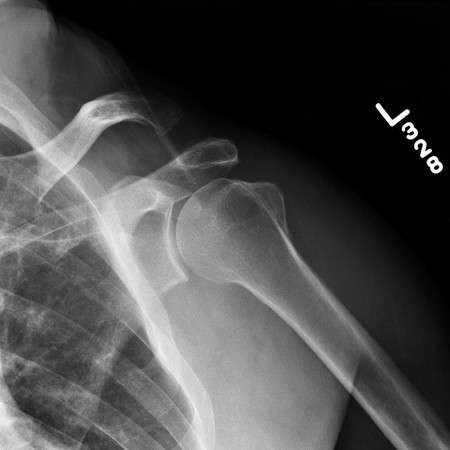
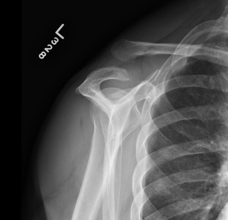
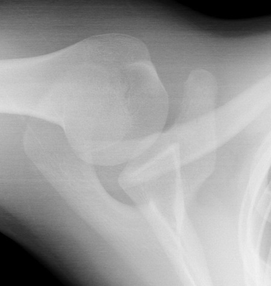
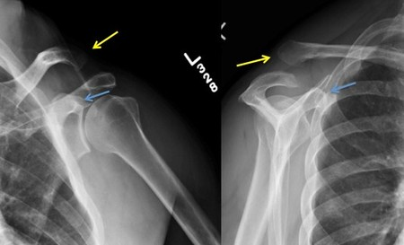
AGrade I(1%)
BGrade II(7%)
CGrade IV(47%)
DGrade III(38%)
EGrade V(7%)
Your answerD
Correct answerC. Grade IV
Explanation
Grade IV
Type IV AC injuries involve complete disruption of both the acromioclavicular (AC) and coracoclavicular (CC) ligament with posterior displacement of the clavicle relative to the articular surface of the acromion (as evidenced by the axillary view). On clinical exam there may be tenting of the posterior skin or posterior deformity.
Incorrect Answers:
A. Type I AC separation is seen when there is sprain of the AC ligament, but the AC ligaments and CC ligaments are intact. This may be radiographically normal. Sometimes weight-bearing radiographs will be performed with the patient holding a 5-pound weight to evaluate for subtle lower-grade separations.
B. Type II AC separation is seen when the AC ligament is disrupted and the CC ligament is sprained but intact. There is an associated widening of the AC joint greater than 6 mm with normal CC distance.
D. Type III AC injuries result in injury of both the AC and CC ligaments with deformity of the AC joint is clearly visible, although swelling may obscure the degree of injury. There is marked tenderness of the CC ligaments, which helps distinguish Type III from Type II injuries. There is usually partial to complete reduction of the separation when the examiner gently pushes down on the distal clavicle.
Radiographs show an elevated distal clavicle and increased CC distance (normal 11 to 13 mm). The distal clavicle is positioned above the plane of the top of the acromion.
E. Type V AC separation involves AC and CC ligament disruption with severe superior displacement of the clavicle, which may lie in a subcutaneous position. This is distinct from grade VI separation in which there is inferior dislocation of the distal clavicle.
Q2
moderate QID 3013
Correct
The patient has a history of postmenopausal bleeding. They have not undergone hormone replacement therapy. Sonographic images of the uterus are shown below. These images are most compatible with which of the following?
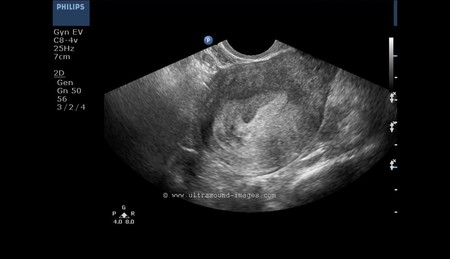
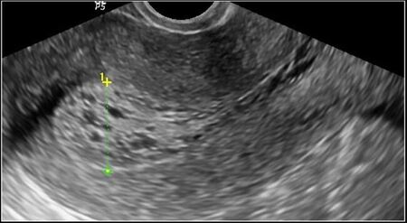
AThese images are suggestive of uterine fibroids(1%)
BImages suggest pelvic inflammation(0%)
CImages suggest lipoleiomyoma of the uterus(6%)
DNormal study(0%)
EEndometrial hyperplasia(93%)
Your answerE
Correct answerE. Endometrial hyperplasia
Vital Concept
Diffuse endometrial thickening in postmenopausal women indicates unopposed estrogen exposure, raising concern for endometrial hyperplasia—a premalignant condition.
Explanation
Endometrial hyperplasia
There is marked thickening of the endometrium, in this case, more than 20 mm. An endometrial thickness greater than 5 mm in a postmenopausal woman is abnormal and can be due to endometrial hyperplasia or carcinoma. The greater the thickness of the endometrium, the higher the chances of endometrial carcinoma.
Incorrect Answers:
A. There is no evidence of uterine fibroids in this case. Fibroids of the uterus involve the myometrium; in this case, the pathology is in the endometrium.
B. There is no evidence of fluid within the endometrial cavity or pelvic inflammation.
C. Lipoleiomyoma is a benign mass of the myometrium that tends to be echogenic; this finding is not present in this case.
D. As stated above, this is not a normal study.
Vital Concept: Diffuse endometrial thickening in postmenopausal women indicates unopposed estrogen exposure, raising concern for endometrial hyperplasia—a premalignant condition.
Q3
easy QID 5101
Correct
In this image, what is vessel number 4?
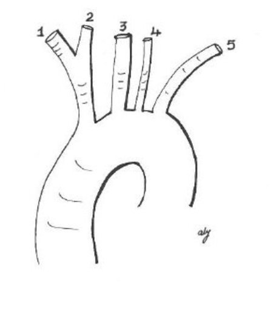
ALeft common carotid artery(2%)
BLeft subclavian artery(1%)
CLeft vertebral artery(96%)
DRight common carotid artery(0%)
Your answerC
Correct answerC. Left vertebral artery
Vital Concept
Left vertebral artery arising directly from the aortic arch is a common normal anatomical variant.
Explanation
Left vertebral artery
This is an aberrant origin of the left vertebral artery from the aortic arch, instead of its normal origin as the first branch of the left subclavian artery. This is seen in approximately 5% of the population and is the most common anomaly of the left vertebral artery.
Incorrect Answers:
A. The left common carotid artery is numbered 3 in this image.
B. The left subclavian artery is numbered 5.
D. The right common carotid artery is numbered 2 in this image.
Vital Concept: Left vertebral artery arising directly from the aortic arch is a common normal anatomical variant.
Q4
easy QID 20776
Correct
A 35-year-old female patient presents with a palpable mobile left breast mass that has been palpable for two years. Which of the following is the most likely explanation given the mammographic and ultrasound findings?
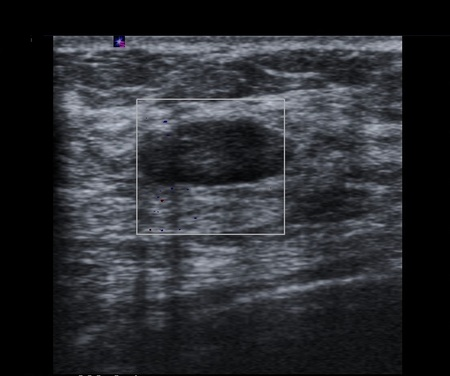
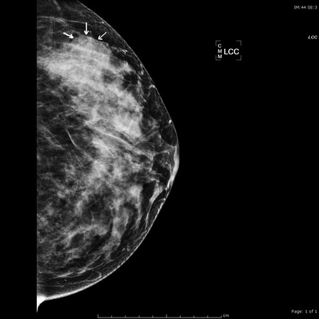
AInvasive ductal breast cancer(0%)
BDCIS(0%)
CComplicated breast cyst(2%)
DFibroadenoma(98%)
Your answerD
Correct answerD. Fibroadenoma
Explanation
Fibroadenoma
This case demonstrates the typical mammographic and sonographic features of a fibroadenoma. A well-circumscribed dense mass on mammography and a hypoechoic circumscribed mass with no posterior acoustic enhancement on ultrasound are typical features of a fibroadenoma.
Incorrect Answers:
A. The mammogram demonstrates an isodense mass with well-circumscribed and indistinct margins. Invasive ductal carcinoma tends to present as a small <1cm spiculated mass with or without microcalcifications. Amorphous microcalcifications may be present in 10 to 15% of cases. On ultrasound, invasive ductal carcinoma usually presents as an irregular mass that is taller-than-wide and has posterior acoustic shadowing.
B. The hallmark of DCIS on mammography is calcifications. Linear calcifications usually correlate with the comedo type, and clustered calcifications usually correlate with the non-comedo type. A microlobulated mild hypoechoic mass with ductal extension and normal acoustic transmission is considered the most common feature in sonographically-detected DCIS. However, seeing DCIS on ultrasound is not common.
C. This is a soft tissue mass rather than a cyst.
Q5
hard QID 37595
Correct
The concept of a "just culture" was introduced to rectify the call for a blame-free, systems-based approach to adverse medical events, and the need to, at times, ascribe blame to an individual. Which statement is in line with a just culture?
AIt focuses on identifying and addressing individual issues that result in unsafe behaviors(9%)
BIt serves to maintain individual accountability by establishing a "three strikes and you're out" procedure for reckless behavior(1%)
CIt favors a "no blame approach" to solving issues ✔(13%)
DThe response to an error is predicated on the type of behavior associated with the error(73%)
EThe response to a near miss is based on the severity of the event.(4%)
Your answerD
Correct answerD. The response to an error is predicated on the type of behavior associated with the error
Vital Concept
A prevailing blame culture in health care has been suggested as a major source of an unacceptably high number of medical errors. A just culture has emerged as an imperative for improving the quality and safety of patient care.
Explanation
The response to an error is predicated on the type of behavior associated with the error
Just culture represents a balanced approach to accountability that moves beyond blame-focused responses to medical errors. Developed by David Marx, this model categorizes behaviors into three types: human error (console and fix systems), at-risk behavior like shortcuts (coach), and reckless rule violations (punish). Response is based on behavior type rather than outcome severity, promoting psychological safety for error reporting while maintaining individual accountability.
Incorrect Answers:
A. B. Just culture focuses on identifying and addressing systems issues that lead individuals to engage in unsafe behaviors, while maintaining individual accountability by establishing zero tolerance for reckless behavior.
C. A just culture distinguishes between human error, at-risk behavior (e.g., taking shortcuts), and reckless behavior (e.g., ignoring required safety steps), in contrast to an overarching “no-blame” approach still favored by some.
E. In a just culture, the response to an error or near miss is predicated on the type of behavior associated with the error, and NOT the severity of the event.
Vital Concept: A prevailing blame culture in health care has been suggested as a major source of an unacceptably high number of medical errors. A just culture has emerged as an imperative for improving the quality and safety of patient care.
Q6
moderate QID 21100
Correct
Which of the following is the most likely explanation of the finding shown below?
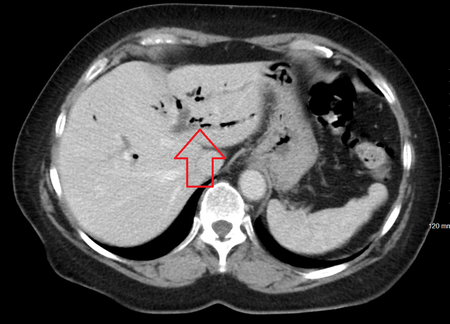
AAir in the bile ducts(84%)
BAir in the portal veins(12%)
CAir in the peritoneal cavity(1%)
DAir in the gastric wall(2%)
Your answerA
Correct answerA. Air in the bile ducts
Explanation
Air in the bile ducts
Branching centrally-located air in the liver is in the bile ducts.
Incorrect Answers:
B. Branching peripherally-located air in the liver is in the portal veins.
C. This air is clearly not in the peritoneum.
D. There is no air in the gastric wall.
Q7
easy QID 43613
Correct
Which of the following is the most likely diagnosis in this child with leukocoria based on the findings shown below?
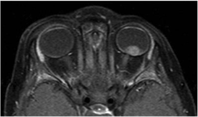
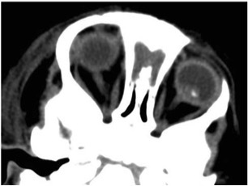
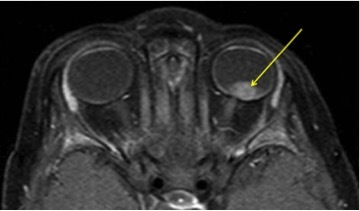
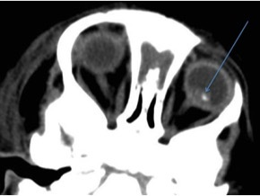
ARetinopathy of prematurity(1%)
BRetinoblastoma(98%)
CLymphoma(0%)
DMelanoma(1%)
ERetinal telangiectasia(1%)
Your answerB
Correct answerB. Retinoblastoma
Explanation
Retinoblastoma
The bottom image (T1 fat-sat post-contrast) magnetic resonance image (MRI) shows a hyperintense mass in the posterior aspect of the left globe (yellow arrow), which on the corresponding CT has a coarse calcification. Even without the imaging, a child presenting with leukocoria (loss of red reflex) should raise one's suspicion for retinoblastoma.
Retinoblastoma is the most common intraocular neoplasm found in childhood. It may be sporadic or secondary to a germline mutation of the RB tumor suppressor gene, which is usually inherited. Retinoblastoma may be unilateral or bilateral; bilateral cases essentially always have a germline mutation. Most cases are diagnosed within the first 4 years of life. Presentation is most frequently with leukocoria or loss of red-eye reflex.
Incorrect Answers:
A. Retinopathy of prematurity is an ocular condition seen in the infant population. It often occurs bilaterally, although usually with significant asymmetry. The globe size can be small or even normal. Calcification can occur but is rare.
C. Orbital lymphoma patients are typically between 50 and 70 years of age. It usually appears as a soft tissue mass, either involving the conjunctiva or elsewhere in the orbit, frequently in the upper outer quadrant, closely associated with the lacrimal gland.
D. Orbital melanoma is the most common primary intraocular malignancy in adults. The incidence increases with age, with only 2% found in patients younger than 20 year of age. CT often demonstrates an elevated, hyperdense, sharply marginated lenticular or mushroom-shaped lesion, which on MR has moderate high intrinsic T1 signal.
E. Retinal telangiectasia, also known as Coats' disease, is a rare congenital disease affecting the eyes and is a cause of leukocoria. Imaging features include an enhancing subretinal collection that may have a V-shaped configuration similar to retinal detachment. In advanced cases, the globe contains proteinaceous debris.
Q8
moderate QID 37567
Correct
A 39-year-old female patient arrives at the breast imaging center with right breast pain. A mammogram is performed, followed by a focused ultrasound. Which of the following is the most likely diagnosis?
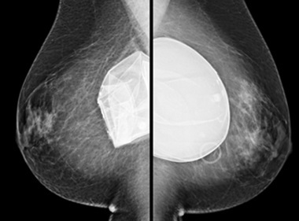
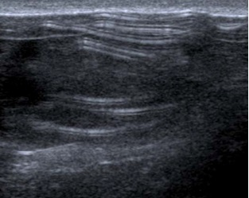
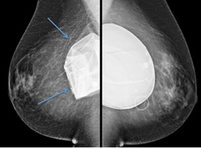
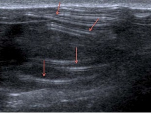
ANormal exam(0%)
BIntracapsular silicone implant rupture(9%)
CExtracapsular silicone implant rupture(5%)
DSaline implant rupture(86%)
Your answerD
Correct answerD. Saline implant rupture
Vital Concept
Saline implant rupture causes rapid decompression and is frequently a clinical diagnosis due to obvious deflation - on imaging, shows collapsed, wrinkled, and folded silicone shell that may become calcified over time, contrasting with silicone rupture which requires more sophisticated imaging for detection.
Explanation
Saline implant rupture
Following breast augmentation, the body forms a fibrous capsule around the prosthesis, which is referred to as the external capsule. This is in addition to the capsule of the implant itself, or the internal capsule. The majority of implant ruptures are intracapsular, in which the internal implant capsule breaks down, but the implant substance (silicone or saline) remains confined by the external fibrous capsule.
Incorrect Answers:
A. Neither the mammogram nor the ultrasound are normal exams.
B and C. The bilateral MLO mammograms show gross deformity and decrease in size of the right breast (blue arrows) compared to the normal left of the implant (blue arrow). There is no high-density material outside of the implant, no granuloma formation, and no high-density adenopathy. These are all indicators of silicone implant material. As such, this patient has saline implants. Note that the ruptured saline implant displays multiple folds, which are depicted by the red arrows.
Vital Concept: Saline implant rupture causes rapid decompression and is frequently a clinical diagnosis due to obvious deflation - on imaging, shows collapsed, wrinkled, and folded silicone shell that may become calcified over time, contrasting with silicone rupture which requires more sophisticated imaging for detection.
Q9
hard QID 24479
Correct
A 50-year-old patient is having I-131 radioablation of their thyroid for treatment of Graves' disease. What is the maximum allowable radiation exposure for the families of outpatients treated with radioiodine (iodine-131) for hyperthyroidism?
A1 mSv(25%)
B5 mSv(70%)
C6 mSv(3%)
D150 mSv(1%)
Your answerB
Correct answerB. 5 mSv
Vital Concept
Family members and caregivers of radioiodine therapy patients may receive up to 500 mrem (5 mSv) during the contact period, which is five times higher than the 100 mrem annual public limit, requiring written radiation safety instructions when doses exceed 100 mrem.
Explanation
5 mSv
Family members and caregivers of RAI patients may receive up to 500 mrem (5 mSv) during the contact period, which is five times the annual public limit of 100 mrem. This higher threshold accommodates necessary patient care while patients have residual radioactivity. Written radiation safety instructions must be provided when family exposure is likely to exceed 100 mrem, including guidance on distance, time limitations, and specific precautions to maintain doses as low as reasonably achievable. \
Incorrect Answers:
A. The total effective dose equivalent to individual members of the public from the licensed operation should not exceed 0.1 rem (1 mSv) in a year.
C. This is the annual dose limitation for background exposure for a member of the general public.
D. Dose limit for a radiation worker’s lens is 150 mSv per the NRC here in the U.S.
Vital Concept: Family members and caregivers of radioiodine therapy patients may receive up to 500 mrem (5 mSv) during the contact period, which is five times higher than the 100 mrem annual public limit, requiring written radiation safety instructions when doses exceed 100 mrem.
Q10
hard QID 9579
Correct
Assuming oblique head positioning, which one of the following numbered structures is possibly abnormal on this T2-weighted image of the brain?
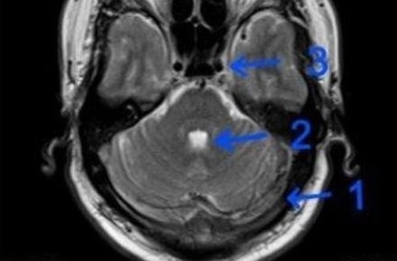
A1(63%)
B2(5%)
C3(9%)
DNone of the above(23%)
Your answerA
Correct answerA. 1
Vital Concept
Nonspecific heterogeneous signal in the transverse dural sinus on T2 MRI requires further evaluation with contrast-enhanced sequences or MRV. This appearance may represent early thrombosis, flow artifacts, or benign structures like arachnoid granulations. T2-weighted sequences alone cannot reliably exclude dural venous sinus thrombosis.
Explanation
1
Structure number one is the left transverse sinus and it shows heterogeneous isointense T2 signal and absence of expected flow void secondary to dural sinus thrombosis. The right transverse sinus demonstrates a similar appearance and is thrombosed as well.
Normally the dural sinuses will show flow voids just like the vessels at the skull base.
Incorrect Answers:
B. This is the fourth ventricle and it is normal with expect T2 hyperintensity.
C. This is the internal carotid artery and it is normal with expected flow void.
Vital Concept: Nonspecific heterogeneous signal in the transverse dural sinus on T2 MRI requires further evaluation with contrast-enhanced sequences or MRV. This appearance may represent early thrombosis, flow artifacts, or benign structures like arachnoid granulations. T2-weighted sequences alone cannot reliably exclude dural venous sinus thrombosis.
Q11
easy QID 2958
Correct
Which of the following is present?
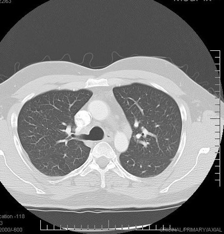
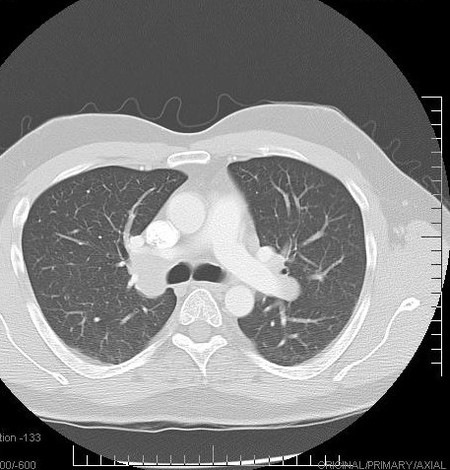
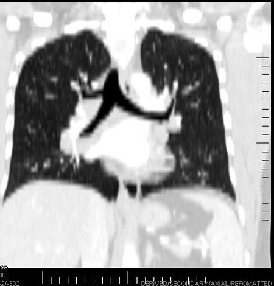
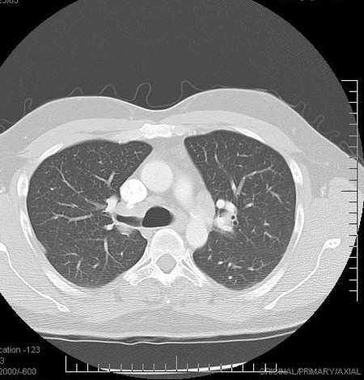
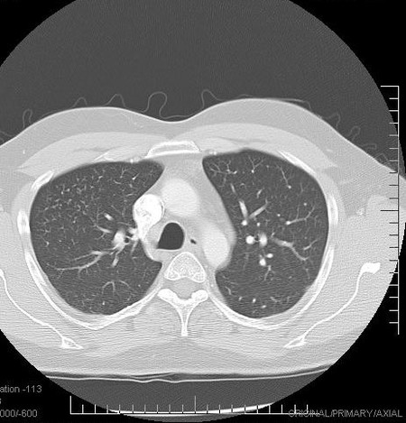
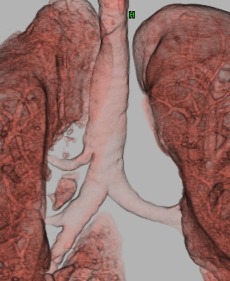
ACongenital pulmonary airway malformation(1%)
BTracheal diverticulum(3%)
CPulmonary sequestration(0%)
DCardiac bronchus(5%)
ERight tracheal bronchus(91%)
Your answerE
Correct answerE. Right tracheal bronchus
Vital Concept
Right tracheal bronchus is a congenital supernumerary bronchus arising from the lateral tracheal wall proximal to the carina. This anomaly predisposes to recurrent pneumonia and chronic bronchitis due to secretion retention and impaired drainage, making it an important consideration in the differential diagnosis of recurrent pulmonary infections.
Explanation
Right tracheal bronchus
The term tracheal bronchus includes a number of bronchial anomalies that arise in the trachea or main bronchus and are directed toward the upper lobe. The anomalous bronchus usually exits the right lateral wall of the trachea less than 2 cm above the carina and can supply the entire upper lobe or its apical segment. Tracheal bronchi are considered to be either displaced or supernumerary. If the anatomic upper-lobe bronchus is missing a single branch, the tracheal bronchus is called displaced. If the right upper-lobe bronchus has otherwise normal apical, posterior, and anterior segmental bronchi, the tracheal bronchus is called supernumerary. If the supernumerary bronchus ends blindly, it is also called tracheal diverticula. If it ends in aerated or bronchiectatic lung tissue, it is called an apical accessory lung or tracheal lobe. Patients are usually asymptomatic but may also present with persistent or recurrent upper-lobe pneumonia, atelectasis or air trapping, or chronic bronchitis.
Incorrect Answers:
A. Congenital pulmonary airways malformations are multi-cystic masses of segmental lung tissue with abnormal bronchial proliferation. There is a greater male prevalence. Lesions are usually unilateral and involve a single lobe. They are classified into four types based on size. Type I lesions are the most common and are 2 to 10 cm in size. Type II lesions are less than 2 cm in diameter and are associated with other congenital abnormalities. Type 3 lesions are less than 5 mm in diameter but typically involve an entire lobe and carry a poor prognosis. Type IV lesions are unlined cysts that typically affect a single lobe. Chest radiographs in type I and II malformations demonstrate multicystic, air-filled lesions. Large malformations may cause mass effect with mediastinal shift and may even result in depression and inversion of the diaphragm. In the neonatal period cysts may be completely or partially fluid-filled with air-fluid levels. Lesions are most commonly discovered on antenatal ultrasounds.
B. A tracheal diverticulum is a sub-type of tracheal bronchus. If a tracheal bronchus is present and the right upper-lobe bronchus has a normal trifurcation into apical, posterior, and anterior segmental bronchi, the tracheal bronchus is defined as supernumerary. If the supernumerary bronchus ends blindly it is called a tracheal diverticula.
C. Pulmonary sequestration is an aberrant formation of segmental lung tissue that is not connected with the bronchial tree. The estimated incidence is at 0.1%. The age of presentation is dependent on the type of sequestration, which also determines the clinical presentation. Pulmonary sequestration can be divided into two distinct groups based on the relationship of the aberrant segmental lung tissue to the pleura: intra-lobar and extra-lobar. The anomalous tissue has a systemic arterial supply, which is usually a branch of the aorta. Intra-lobar venous drainage commonly occurs via the pulmonary veins, azygous system, portal vein, or the inferior vena cava. Intra-lobar sequestrations are closely connected to the adjacent normal lung and do not have a separate pleura. Conversely, extra-lobar venous drainage occurs through the systemic veins into the right atrium. Extra-lobar sequestrations are separate from surrounding lung and contain their own pleura. Plain chest radiographs demonstrate an opacity in the affected segment and may show cystic spaces if infected. Treatment is surgical resection.
D. A cardiac bronchus is a variant of the tracheobronchial tree, arising from the medial aspect of the bronchus intermedius just distally from the origin of the right upper lobe bronchus. It appears as a continuation of the lumen of the right main bronchus, and projects medially and inferiorly towards the posterior aspect of the heart. It can vary in size, morphology, and length. While in about half of patients the bronchus is a short, blind-ending bronchial stump, in the remainder, the bronchus has branches and an amount of aerated lung parenchyma. A cardiac bronchus is almost always an incidental finding of CT, as the majority of cardiac bronchi are asymptomatic. However, repeated chest infection or hemoptysis may occur in the lung parenchyma supplied by the bronchus due to abnormal drainage.
Vital Concept: Right tracheal bronchus is a congenital supernumerary bronchus arising from the lateral tracheal wall proximal to the carina. This anomaly predisposes to recurrent pneumonia and chronic bronchitis due to secretion retention and impaired drainage, making it an important consideration in the differential diagnosis of recurrent pulmonary infections.
Q12
easy QID 5007
Correct
A 17-year-old male with multiple prior urinary tract infections and past history of pyelonephritis presents to the pediatrician for follow-up. There is no evidence of active infection. The following nuclear medicine scan is ordered and shown below. What does the scan show, and what does it mean?
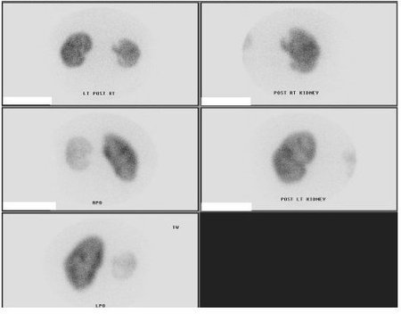
AFocus of decreased uptake in the upper pole of the right kidney; Infarct(1%)
BFocus of decreased uptake in the upper pole of the right kidney; Pyelonephritis(2%)
CFocus of decreased uptake in the upper pole of the right kidney; Trauma(0%)
DFocus of decreased uptake in the upper pole of the right kidney; Cortical scar(96%)
Your answerD
Correct answerD. Focus of decreased uptake in the upper pole of the right kidney; Cortical scar
Vital Concept
DMSA shows permanent renal cortical scarring as areas of decreased uptake following previous pyelonephritis.
Explanation
Focus of decreased uptake in the upper pole of the right kidney; Cortical scar
The focus of photopenia in the upper pole of the right kidney is secondary to a cortical scar. The images are taken from a DMSA scan; DMSA is a cortical binding agent used to assess kidney viability, infection, and structural abnormalities. What clinches the diagnosis of cortical scar in this patient is the history of PRIOR infection, with nothing to suggest active infection. Differential uptakes are also calculated (not shown here) to show the relative function of one kidney in comparison to the other.
Incorrect Answers:
A. While an area of photopenia can be seen with a renal infarction, the history and lack of other pertinent positives such as other organ infarcts suggests another diagnosis.
B. While it is true that multiple rounds of infection led to the area of photopenia, this was in the past. Nothing is stated in the history to suggest active infection.
C. Trauma may lead to focal areas of photopenia; however, no history of trauma was given in the patient.
Vital Concept: DMSA shows permanent renal cortical scarring as areas of decreased uptake following previous pyelonephritis.
Q13
moderate QID 63859
Correct
What of the following is expected to be seen in the condition shown in the image below?
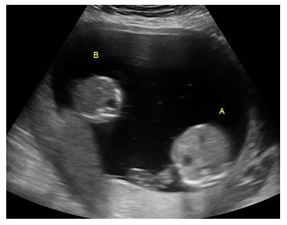
ATwin growth discordance of less than 20%(7%)
BSeparate, but equivalent, volumes of amniotic fluid(4%)
CNormal diastolic flow on umbilical cord Doppler(1%)
DMonochorionic pregnancy(88%)
Your answerD
Correct answerD. Monochorionic pregnancy
Explanation
Monochorionic pregnancy
Twin-twin transfusion occurs in monochorionic pregnancies. They can be monoamniotic or diamniotic. This is characterized by unbalanced arteriovenous communication in the placenta. This caused one twin (Twin A, in this case) to receive too much supply and the other, the “stuck” twin (Twin B, in this case), to be deficient. The donor twin is smaller, pinned to the chorion, has less amniotic fluid and a small or absent urinary bladder (in the setting of diamnotic). The recipient twin is larger, has more amniotic fluid, hydrops fetalis, cardiomegaly and a large urinary bladder (in the setting of diamniotic). In the setting of monochorionic, monoamniotic pregnancy, one fetus will be larger than the other but they will be sharing a single amnion.
Incorrect Answers:
A. Twin growth discordance is greater than 20%, not less than 20%
B. There is no apparent tissue separating the amniotic fluid surrounding the twins, this is most likely a monochorionic/monoamniotic pregnancy with a single (non-separated) volume of amniotic fluid
C. Reversed or absent diastolic flow in the umbilical artery is seen in this condition.
Q14
easy QID 37642
Correct
A restaging PET CT for a 20-year-old female with a history of treated Hodgkin’s lymphoma is performed 8 months post-treatment. Which of the following is the likely etiology of the increased FDG uptake seen on this post-treatment scan?
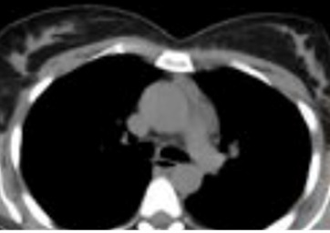
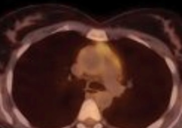
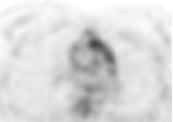
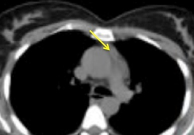
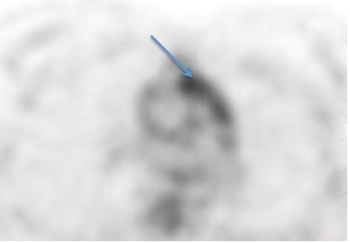
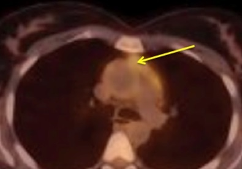
AResidual lymphadenopathy(1%)
BRecurrent lymphoma(2%)
CArtifact(0%)
DThymic rebound(96%)
EEsophageal contractility(0%)
Your answerD
Correct answerD. Thymic rebound
Vital Concept
Thymic rebound hyperplasia is not true thymic hyperplasia. In periods of bodily stress, the thymus may acutely shrink to 40% of its original volume (depending on the severity and duration of the stress). During the recovery phase it can grow back to its original size or even larger (up to 50% larger). This "rebound effect" is known as thymic rebound hyperplasia. It typically takes the thymus 9 months to return to its original size. Examples of acute stress events that can trigger thymic atrophy and later rebound include pneumonia, corticosteroid therapy, radiation therapy, chemotherapy, surgery, burns, post-chemotherapy (10-25% will undergo rebound hyperplasia, usually occurring within 2 years of treatment).
Explanation
Thymic rebound
The CT, PET, and fused PET CT images demonstrate increased FDG uptake in the middle mediastinum (blue arrow), which, on the fused image, can be seen to be associated with prevascular soft tissue (yellow arrows). This is the location of the thymus. The thymus is prominent in childhood, where it plays a crucial role in immune system development. Involution of the gland begins in adolescence. The proposed mechanism for therapy-related thymic rebound includes initial thymic regression secondary to chemotherapy or corticosteroids, which leads to T cell death and thymocyte death. When chemotherapy is withdrawn the opposite effect occurs, with the subsequent rebound of thymic tissue. Moderate to high FDG uptake is seen in these patients and should not be confused with asymmetric uptake due to recurrent or residual lymphoma in this location.
Incorrect Answers:
A. B. In residual lymphadenopathy asymmetric uptake due to recurrent or residual lymphoma is seen in this location. Other things to look for that would be more supportive of recurrent or residual disease are abnormal soft tissue and/or FDG uptake in a unilateral or mid mediastinal location.
C. Artifact is rarely seen in this location. E. Esophageal smooth muscle contraction or gastroesophageal reflux may cause focal increased FDG uptake. However, the esophagus is a posterior mediastinal structure.
Vital Concept: Thymic rebound hyperplasia is not true thymic hyperplasia. In periods of bodily stress, the thymus may acutely shrink to 40% of its original volume (depending on the severity and duration of the stress). During the recovery phase it can grow back to its original size or even larger (up to 50% larger). This "rebound effect" is known as thymic rebound hyperplasia. It typically takes the thymus 9 months to return to its original size. Examples of acute stress events that can trigger thymic atrophy and later rebound include pneumonia, corticosteroid therapy, radiation therapy, chemotherapy, surgery, burns, post-chemotherapy (10-25% will undergo rebound hyperplasia, usually occurring within 2 years of treatment).
Q15
moderate QID 18097
Correct
Which of the following is the most likely diagnosis in this 52-year-old male patient with a history of chronic malnutrition and recent hospitalization for altered mental status, from which they recovered for a short period of time and now comes in with symptoms of recurrent altered mental status and new-onset quadriparesis in 10 days of post-treatment?
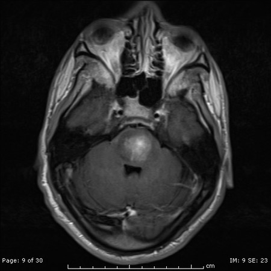
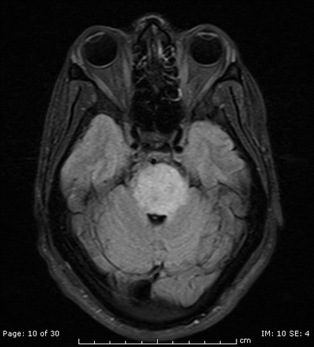
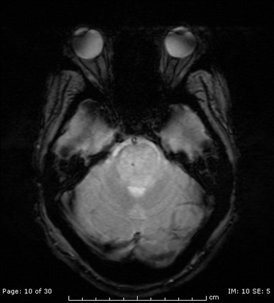
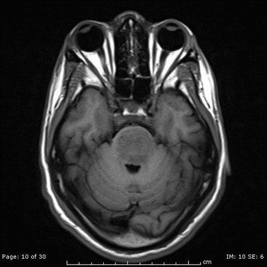
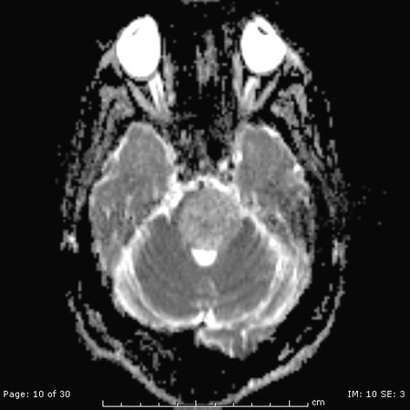
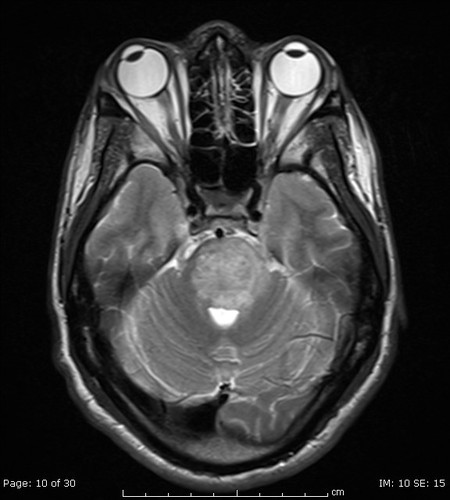
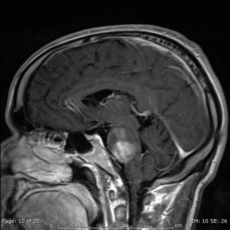
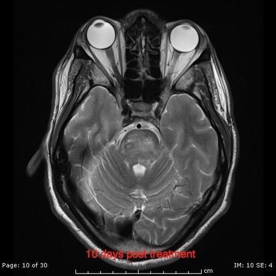
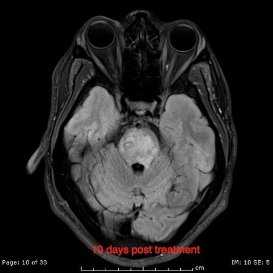
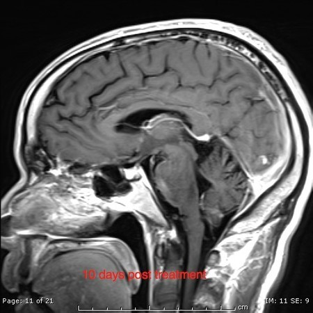
ARecurrent active multiple sclerosis(0%)
BOsmotic demyelination syndrome(90%)
CBrain stem glioma(9%)
DBrain stem infarct(0%)
Your answerB
Correct answerB. Osmotic demyelination syndrome
Explanation
Osmotic demyelination syndrome
Osmotic demyelination syndrome (ODMS), previously known as central pontine myelinolysis (CPM), is a central and symmetric pontine osmotic demyelination syndrome that is usually seen in patients with chronic alcohol use disorder, chronic malnutrition, and sometimes immunosuppressed transplant patients. This case describes the typical clinical presentation and demonstrates the typical imaging features of this disease. Usually, the patient presents with electrolyte imbalance leading to mental status changes; after correction of the electrolyte imbalance, patients' symptoms improve, just to be followed by a recurrent change in mental status and developing paresis secondary to the demyelination. MRI demonstrates central pontine (sparing of the peripheral fibers of the pons, as shown) hypointense T1, hyperintense T2, hyperintense T2 FLAIR, and enhancing lesion. After conservative therapy, the lesion will regress as shown on the images only 10 days post-treatment. Extrapontine myelinolysis (EPM) can also occur as part of the disease and involves the subcortical fibers in the cerebrum or the basal ganglia.
Incorrect Answers:
A. MS tends to be asymmetric, linear, or ovoid lesions. Other lesions in the periventricular white matter, the corpus callosum, the spinal cord, and the brain stem are usually present. Optic nerve involvement can be seen as well.
C. Typically seen in young adults and children, there will be an asymmetric enhancement if the glioma is of a higher grade. More mass effect is also expected. The clinical presentation, in this case, is not typical for a brain stem glioma.
D. Tends to be asymmetric with the involvement of the peripheral fibers, unlike this case.
Q16
moderate QID 39263
Correct
A 23-year-old female patient presents to the emergency department with vaginal bleeding. The patient underwent an early second trimester surgical abortion 10 days prior. Which of the following is the most likely diagnosis?
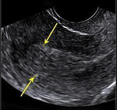
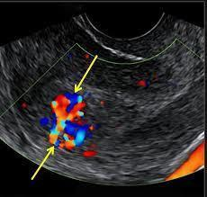
ANormal postpartum change(0%)
BPerforated uterus(1%)
CEndometritis(2%)
DRetained products of conception(85%)
Your answerD
Correct answerD. Retained products of conception
Explanation
Retained products of conception
The grayscale (bottom) and color Doppler (top) ultrasounds demonstrate a thickened endometrium with Doppler flow near the fundus. Note the normal endometrial stripe inferiorly. These findings have a high positive predictive value for retained products of conception and are in keeping with the clinical history. An additional finding which may be seen with retained products include complex endometrial fluid. Retained placental tissue may occur following pregnancy termination, cesarean delivery, or normal vaginal delivery. If left untreated, this can result in prolonged postpartum hemorrhage and endometritis.
Incorrect Answers:
A. Normal postpartum changes that can be seen sonographically include an enlarged uterus with echogenic foci, thickening of the endometrial stripe, and endometrial fluid.
B. A perforated uterus is a feared complication of surgical abortion. It can appear as a complex intrauterine collection (hemorrhage) with a defect seen in the uterine wall.
C. Endometritis is more of a clinical diagnosis than an imaging diagnosis. It has nonspecific sonographic findings that can include a thickened, heterogeneous endometrium with intracavitary fluid and/or air.
Q17
easy QID 2857
Correct
A 56-year-old man is admitted after he was found in a deep stupor. He has no previous medical history and does not smoke, consume alcohol, or use illicit drugs. He has symmetric facial responses and withdrawal of both arms and legs to painful stimuli. All brainstem reflexes are intact and Hoffman-Trömner and Babinski reflexes are negative on both sides. His magnetic resonance image (MRI) is shown below. What single vessel, if occluded acutely, could result in the imaging findings shown?
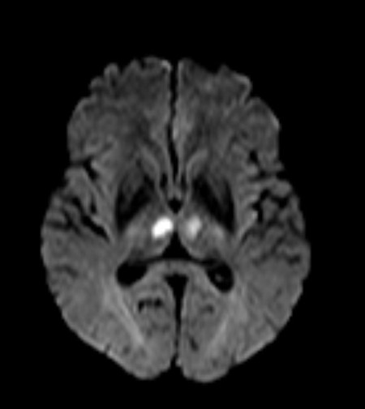
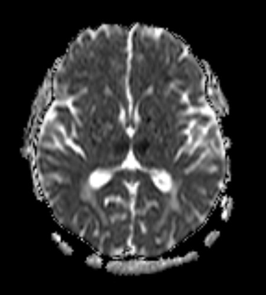
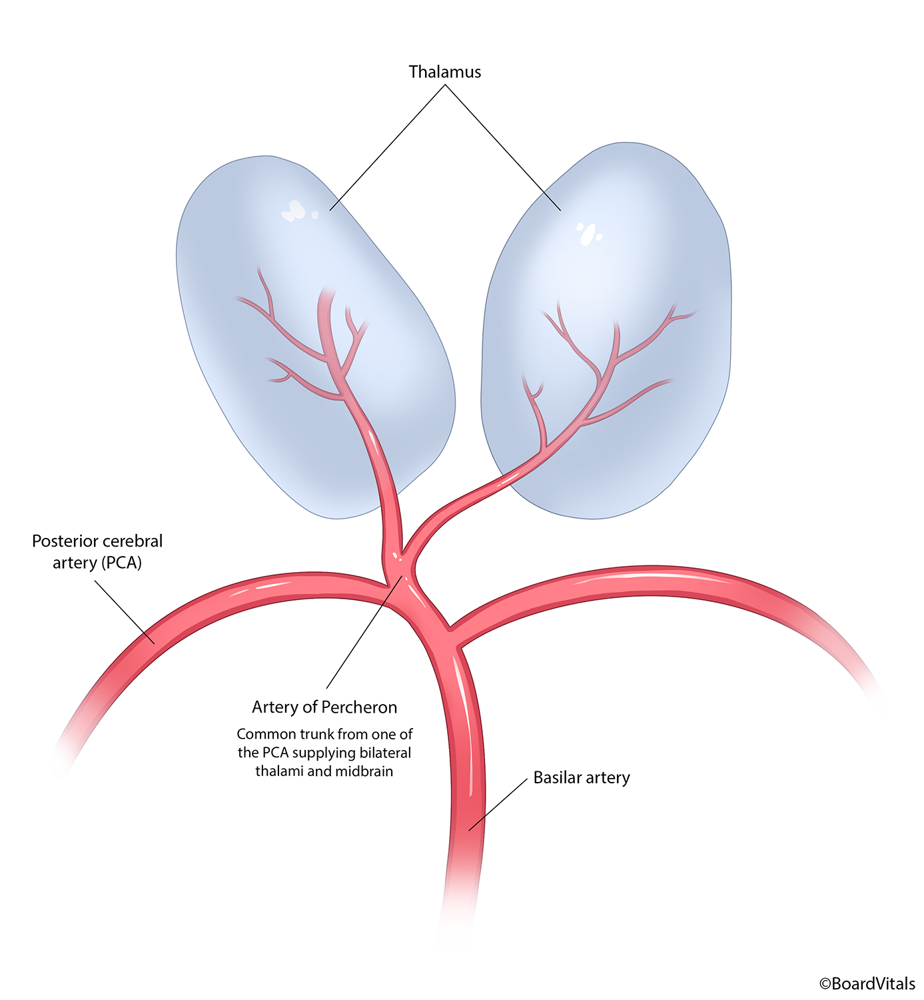
ASuperior cerebellar artery(1%)
BMiddle cerebral artery(1%)
CVein of Trolard(2%)
DArtery of Percheron(96%)
Your answerD
Correct answerD. Artery of Percheron
Vital Concept
Occlusion of the artery of Percheron results in acute bilateral thalamic infarcts. The artery arises from the pre-communicating segment of the posterior cerebral artery or the tip of the basilar artery. Clinical findings include decreased level of consciousness, oculomotor nerve deficits, and neuropsychiatric impairment and loss of self-activation that become evident when the patient is conscious. Third cranial nerve deficits occur with involvement of the periaqueductal gray matter.
Explanation
Artery of Percheron
Explanation:
The images demonstrate bilateral thalamic infarcts. The single artery that can become occluded to cause acute bilateral infarcts in the thalami is the artery of Percheron. This single artery can arise from the unilateral pre-communicating (P1 segment) of the PCA, or rarely, the tip of the basilar artery. The illustration shows how the unilateral artery variant supplies both thalami. None of the other choices, if occluded, would result in acute infarction to both thalami.
In addition to a decreased level of consciousness, bilateral thalamic paramedian infarction results in neuropsychiatric impairment and loss of self-activation. Paramedian nuclei of the thalamus consist primarily of a dorsomedian nucleus and intralaminar nuclei. The intralaminar nuclei consist of parafascicular, centromedian, central medial, paracentral, and central lateral nuclei. Both nuclear groups are characterized by reciprocally activating connections with the anterior, orbitofrontal, and medial prefrontal cortices through the thalamic peduncles.
The rostral midbrain can also be involved after occlusion of the artery of Percheron. This is suggested by the presence of right mydriasis, ptosis, and exophthalmos, caused by involvement of the periaqueductal gray matter, where the third cranial nerve nuclei are located.
Artery of Percheron
Incorrect Answers:
A. The imaging features for ischemic stroke in the vascular territory of the superior cerebellar artery include the superior vermis, superior surface of the cerebellar hemispheres, much of the cerebellar white matter, and regions of the midbrain.
B. The middle cerebral artery (MCA) is the most common artery involved in acute stroke. It branches directly from the internal carotid artery and consists of four main branches, M1, M2, M3, and M4. These vessels provide blood supply to parts of the frontal, temporal, and parietal lobes of the brain, as well as deeper structures, including the caudate, internal capsule, and thalamus.
C. Cortical vein thrombosis, also known as superficial cerebral vein thrombosis, is a subset of cerebral venous thrombosis involving the superficial cerebral veins besides the dural sinus, often coexisting with deep cerebral vein thrombosis or dural venous sinus thrombosis.
Vital Concept: Occlusion of the artery of Percheron results in acute bilateral thalamic infarcts. The artery arises from the pre-communicating segment of the posterior cerebral artery or the tip of the basilar artery. Clinical findings include decreased level of consciousness, oculomotor nerve deficits, and neuropsychiatric impairment and loss of self-activation that become evident when the patient is conscious. Third cranial nerve deficits occur with involvement of the periaqueductal gray matter.
Q18
hard QID 3091
Correct
An 89-year-old male with liver dysfunction and cirrhosis presents with hematochezia. Which of the following is the most likely diagnosis?
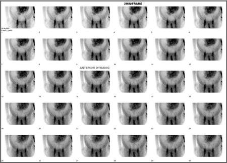
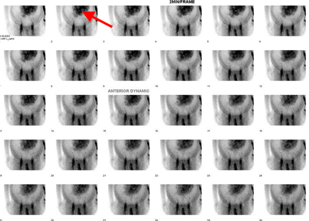
ALower gastrointestinal (GI) bleed(8%)
BUpper gastrointestinal (GI) bleed(9%)
CIntraperitoneal bleed(13%)
DAscites(68%)
Your answerD
Correct answerD. Ascites
Vital Concept
The appearance of this type of scan, as discussed above, in the setting of ascites, mimics the classic plain radiographic findings of ascites, including centrally floating bowel loops surrounded by a ground-glass ascitic rim; widened pericolic gutter; and medial displacement of the lateral border of the right lobe of the liver (sign of marked ascites).
Explanation
Ascites
The planar images shown demonstrate a large volume of ascites with the centralization of the bowel loops. The uptake within the bowel appears greater than expected because of this centralization. No anterograde or retrograde focus of radiotracer is seen to suggest active bleeding. Typically, 99mTc-RBCs distribute within vascular structures. A small amount of activity can present in the bladder due to the presence of free 99m Tc-pertechnetate. Considerable bowel bleeding is identifiable with its linear pattern and peripheral location in the abdomen. Sigmoid bleed scan appears as S-shaped. Small bowel bleed can be differentiated with its rapid curvilinear pattern of activity and central location. Factors associated with low bleeding rates include: detection of activity after one hour, low target to background ratio (less intense than liver), and short bleeding duration. Factors indicating higher bleeding rates include early and intense activity with longer duration.
A review of dynamic cine clips (not provided here) can confirm planar imaging findings. Of note, the scan also demonstrates contamination overlying the lower pelvis, confirmed to be external to the patient. Activity in the stomach on GI bleeding scintigraphy may represent free Tc-99m pertechnetate. The initial activity, in the case of free pertechnetate, appears to be pooling in the wall of the stomach rather than accumulating within the fundus of the stomach. Second, with free pertechnetate, the activity should appear more rapidly (within 5 to 10 minutes after the injection).
Incorrect Answers:
A. No anterograde or retrograde focus of radiotracer is seen to suggest active bleeding.
B. The study demonstrates normal uptake within centralized bowel loops. No anterograde or retrograde focus of radiotracer is seen to suggest active bleeding.
C. Active intraperitoneal bleed would demonstrate extravasation of the radiotracer throughout the peritoneal space.
Vital Concept: The appearance of this type of scan, as discussed above, in the setting of ascites, mimics the classic plain radiographic findings of ascites, including centrally floating bowel loops surrounded by a ground-glass ascitic rim; widened pericolic gutter; and medial displacement of the lateral border of the right lobe of the liver (sign of marked ascites).
The centrally located pool of tracer activity within the intestinal blood pool should not be confused with active bleeding into the gut, nor should it be confused with the vascular blush of a tumor mass. In patients with cirrhosis of the liver, some of this centrally located activity may be secondary to hepatofugal blood flow.
Causes of ascites other than liver disease, such as ovarian diseases, peritoneal carcinomatosis, myxedema, peritonitis, and iatrogenic entities such as peritoneal dialysis and bile leaks, might produce the findings described here. The phenomenon noted in this case is analogous to that seen with pericardial effusion in radionuclide ventriculography.
Q19
moderate QID 56732
Correct
A 47-year-old male with hypertension underwent echocardiography. Results were abnormal, and further evaluation was conducted with an EKG-gated cardiac CT. In the image below, what structure does the yellow arrow point to?
ALeft atrial appendage(85%)
BCrista terminalis(2%)
CLeft pulmonary vein(11%)
DCoronary sinus(2%)
Your answerA
Correct answerA. Left atrial appendage
Explanation
Left atrial appendage
Axial oblique image at the level of the aortic valve shows the left atrial appendage indicated by the yellow arrow. Also known as the left auricle, the left atrial appendage is a blind-ending outpouching from the atrium. In the setting of atrial fibrillation, thrombi can develop in this location due to stagnant blood flow. Additionally, poor contrast mixing during CT can give the appearance of pseudo-thrombi. Left atrial appendage closure from either an open surgical or percutaneous intervention may be performed to reduce the risk of thromboembolic stroke. The green arrow shows a rare anatomic variant of a quadricusp aortic valve.
Incorrect Answers:
B. The crista terminalis is muscular ridge located at the opening of the right atrial appendage.
C. A left pulmonary vein is depicted by the red arrow draining into the left atrium.
D. The coronary sinus drains into the right atrium and is not seen at this level.
Q20
easy QID 38125
Correct
A 2-year-old patient with abdominal pain and rectal bleeding undergoes the study shown. Which of the following statements is accurate regarding the diagnosis?
AIt is rare and is seen in less than 0.1 percent of the population(4%)
BThe majority of individuals with this process are symptomatic(2%)
CIt typically derives its blood supply from a branch of the inferior mesenteric artery(2%)
Meckel’s diverticulum is a true congenital diverticulum, arising in the vicinity of the ileocecal valve. It is often lined with gastric mucosa. Many patients remain asymptomatic. Complications tend to occur in the first 2 years of life.
Explanation
Symptomatic cases commonly contain gastric mucosa
The images are from a Meckel scan with tc99m-pertechnetate. It shows progressive uptake in a tubular mid-abdominal structure just to the right of midline (red arrows), consistent with Meckel’s diverticulum. This is a type of congenital intestinal diverticulum that occurs around the distal ileum. Meckel’s diverticulum is a true diverticulum, arising from the antimesenteric border of the small intestine. Most are found within 100 cm of the ileocecal valve. They are lined with heterotopic mucosa in up to 60% of cases, most commonly gastric mucosa.
Incorrect Answers:
A. It is considered the most common structural congenital anomaly of the gastrointestinal tract and is seen in up to 2% of the population.
B. A large proportion of individuals remain asymptomatic.
C. Their blood supply typically arises from the omphalomesenteric artery, which is a branch of the superior mesenteric artery.
E. If complications occur, it is often in the first 2 years of life.
Vital Concept: Meckel’s diverticulum is a true congenital diverticulum, arising in the vicinity of the ileocecal valve. It is often lined with gastric mucosa. Many patients remain asymptomatic. Complications tend to occur in the first 2 years of life.
Q21
hard QID 47284
Incorrect
A 46-year-old female is referred for thyroid ultrasound based on a gradual, painless enlargement of the gland. Her T4 levels are normal. Which of the following is the most likely diagnosis?
AHashimoto's thyroiditis(68%)
BNon-Hodgkin's lymphoma(11%)
CGraves' disease(2%)
Dde Quervain thyroiditis(5%)
ERiedel thyroiditis(14%)
Your answerE
Correct answerA. Hashimoto's thyroiditis
Explanation
Hashimoto's thyroiditis
The images show a bilateral, diffuse, hypoechoic, heterogeneous, micronodular echo pattern involving the entire thyroid gland. This appearance, combined with the clinically euthyroid history is diagnostic of Hashimoto's thyroiditis. Hashimoto's thyroiditis is an autoimmune process in which patients, predominantly women, develop antibodies to thyroglobulin and the thyroid peroxidase enzyme. This results in lymphocytic infiltration of the thyroid gland with lymphoid follicles replacing thyroid follicles and gives the appearance described above.
Many people with thyroid antibodies do not have hypothyroidism, and others have no goiter or even have an atrophic thyroid gland. These are considered manifestations of the same disorder with differing clinical phenotypes. The presence of serum thyroid autoantibodies may be sufficient evidence for Hashimoto's disease. This logic is based upon the observation that thyroid antibodies correlate well with the presence of a lymphocytic infiltrate in the thyroid gland at autopsy examination of individuals with no history of thyroid failure.
Hence, the two extreme forms of the disorder are goitrous autoimmune thyroiditis and atrophic autoimmune thyroiditis, with the common pathologic feature being lymphocytic infiltration and the common serological feature being the presence of high serum concentrations of antibodies to thyroid peroxidase (TPO) and thyroglobulin (Tg). Given the pathogenetic and pathologic similarities, we use the term Hashimoto's thyroiditis for all forms of chronic autoimmune (lymphocytic) thyroiditis. The term lymphocytic thyroiditis alone can be confusing. Although the thyroid enlargement that can occur is usually asymptomatic, rare patients have thyroid pain and tenderness, particularly if there is rapid thyroid swelling, and such patients may even require surgical relief.
Incorrect Answers:
B. Thyroid non-Hodgkin's lymphoma appears as focal or diffuse hypoechoic parenchymal often with extrathyroid spread and adenopathy. A history of antecedent Hashimoto thyroiditis may precede lymphoma of the thyroid.
C. Graves' disease presents as diffuse, hypoechoic, spotty, heterogeneous parenchymal echo pattern with markedly increased vascularity.
D. de Quervain thyroiditis appears as focal, ill-defined hypoechoic areas within thyroid. Vascularity may be increased or normal. Clinically patients present with fever, leukocytosis, and pain.
E. Riedel thyroiditis represents benign fibrosis of part or all of the thyroid gland. It is seen as diffuse enlargement and extension to surrounding tissues. This condition is typically painless. The rate of growth tends to be rapid with some patients presenting with dysphagia and/or stridor from direct compression/involvement of adjacent structures.
Q22
easy QID 24048
Correct
A pulmonary angiogram is performed on this young female with a history of numerous cerebrovascular ischemic events. Which of the following is the diagnosis?
Digital subtraction angiography shows pulmonary arteriovenous malformations with feeding arteries and enlarged draining veins creating right-to-left shunts. These shunts bypass normal capillary filtration, predisposing to stroke and brain abscess through paradoxical embolization.
Explanation
Hereditary hemorrhagic telangiectasia
The pulmonary artery angiogram depicts an arteriovenous malformation (AVM - yellow arrow). This is very frequently associated with HHT or Osler-Weber-Rendu syndrome. Though frequently asymptomatic, this condition can present with strokes, given the right-to-left shunting provided by the AVM, which bypasses the pulmonary capillaries. Other features of the disease are frequent epistaxis and cutaneous telangiectasias.
Incorrect Answers:
B. Cystic fibrosis patients typically have enlarged bronchial arteries secondary to chronic inflammation, which have a tendency towards bleeding and hemoptysis.
C. Patients with coagulopathies such as Factor V Leiden are prone to deep vein thrombosis and pulmonary embolism.
D. There are no specific angiographic findings of primary lung cancer. The angiogram may appear normal or may show irregular tumor neovascularity.
E. Fibromuscular dysplasia is a disease affecting arteries and arterioles in which there is disordered mesenchymal growth in either intimal, media, or adventitia. It can occur in any location, including the pulmonary arterioles, though it is most frequently seen in the renal arteries. It has a characteristic "string of beads" appearance.
Vital Concept: Digital subtraction angiography shows pulmonary arteriovenous malformations with feeding arteries and enlarged draining veins creating right-to-left shunts. These shunts bypass normal capillary filtration, predisposing to stroke and brain abscess through paradoxical embolization.
Q23
hard QID 2921
Correct
Review the ultrasound diagrams of the same phantom. Ultrasound B was obtained with:
AHigher bandwidth(11%)
BHigher frame rate(5%)
CLinear array transducer(7%)
DHigher line density(70%)
E1.5D Transducer(7%)
Your answerD
Correct answerD. Higher line density
Vital Concept
Higher line density improves lateral resolution through increased spatial sampling frequency across the image width, providing more data points for accurate representation of laterally separated structures, though at the cost of reduced temporal resolution.
Explanation
Higher line density
Image B shows improved lateral resolution. Lateral resolution is strongly dependent on beam diameter. The narrower the beam, the higher the lateral resolution. For this reason, lateral resolution is highly depth-dependent. Remember, the beam converges in the near field and diverges in the far field, with the narrowest beam diameter at the near-field/far-field interface. At that point, the beam diameter is approximately 1/2 the transducer diameter (see figure). Smaller beam diameter results in higher line density and better lateral resolution, with the trade-off being lower frame rate.
Incorrect Answers:
A. Bandwidth affects axial resolution.
B. While the frame rate is inversely proportional to line density, it is a measure of temporal resolution. Increasing frame rate may result in lower lateral resolution from decreased line density.
C. The transducer footplate is curved so this is not a linear array transducer.
E. The 1.5D transducer improves elevational resolution.
Vital Concept: Higher line density improves lateral resolution through increased spatial sampling frequency across the image width, providing more data points for accurate representation of laterally separated structures, though at the cost of reduced temporal resolution.
Q24
moderate QID 56287
Correct
A 52-year-old male patient with chronic renal disease presents to the emergency room with acute knee pain. Initial radiograph is presented below. Which of the following is the best diagnosis?
Chronic renal insufficiency predisposes to spontaneous quadriceps tendon rupture. Radiographic findings include patella baja, obliterated quadriceps shadow, and suprapatellar soft tissue mass. Magnetic resonance imaging demonstrates tendon discontinuity with hematoma.
Explanation
Quadriceps tendon rupture
The radiograph demonstrates focal disruption of the quadriceps tendon with subcutaneous fat herniating into the defect (yellow arrow) and marked surrounding soft tissue swelling. Additionally, there is marked patella baja. The MRI correlate is depicted on the above sagittal T2 fat-saturated image showing complete tendon rupture with gap (red arrow) and associated post-traumatic hemorrhage/fluid. Patients with connective tissue disease, steroid use, and chronic renal failure are predisposed to this injury. Early surgical intervention is usually indicated.
Incorrect Answers:
A. Although a joint effusion is present, this is not the best choice as focal disruption of the quadriceps tendon is evidence.
C. The bony fragment posterior to the joint is a fabella rather than sequelae of a PCL avulsion fracture.
D. No tibial plateau fracture is present.
Vital Concept: Chronic renal insufficiency predisposes to spontaneous quadriceps tendon rupture. Radiographic findings include patella baja, obliterated quadriceps shadow, and suprapatellar soft tissue mass. Magnetic resonance imaging demonstrates tendon discontinuity with hematoma.
Q25
moderate QID 22396
Correct
A 65-year-old female patient with a history of dialysis-dependent renal failure presents with worsening left upper extremity edema. Which of the following is the diagnosis?
ACellulitis(0%)
BArterial inflow stenosis(6%)
CArteriovenous malformation(1%)
DOutflow stenosis(86%)
EPaget-Schroetter disease(7%)
Your answerD
Correct answerD. Outflow stenosis
Vital Concept
Outflow stenosis in arteriovenous fistulas causes aneurysmal dilatation, making the fistula tense and pulsatile. Clinical signs include arm swelling, elevated venous pressures during dialysis, poor access flows, and prolonged bleeding after dialysis. Balloon angioplasty is a first-line treatment but often requires repeated interventions and possible stenting.
Explanation
Outflow stenosis
Selected images from a left upper extremity brachial-axillary venogram show a high-grade upstream stenosis of the left brachiocephalic vein (blue arrow). A commonly encountered dialysis management complication is outflow venous stenosis in the setting of a surgically created arteriovenous dialysis fistula. On clinical exam, these patients present with upper extremity edema, increased pulsatility of the fistula, and decreased palpable thrill. The initial treatment is balloon angioplasty (green arrow), with stenting reserved for refractory cases. Frequently these stenoses will recur and require stenting.
Incorrect Answers:
A. Venous stasis in the setting of outflow stenosis may place the patient at increased risk for cellulitis, but the imaging findings suggest another diagnosis.
B. Arterial inflow stenosis is another potential complication in hemodialysis fistula management and may also require angioplasty and/or stent placement. These patients often present with decreased pulsatility and thrill in the fistula segment. Edema may not be seen.
C. Arteriovenous malformations are abnormal connections between arterial and venous segments without an intervening capillary bed. Unlike arteriovenous fistulae, these frequently are seen to have an associated prominent tangle of abnormal vessels, known as a nidus. Arteriovenous malformations may be treated with embolization, surgery, radiation, or a combination thereof. The imaging findings and clinical history do not suggest this diagnosis.
E. Paget-Schroetter disease, or effort thrombosis of the subclavian vein, is thrombosis of the subclavian vein related to repetitive trauma of the subclavian vein against an associated cervical rib, first rib, or clavicle. It is most often seen in young male patients who participate in overhead throwing sports. The treatment typically consists of thrombectomy followed by angioplasty and/or surgical resection of the bony abnormality. Stenting is not recommended, as trauma related to the osseous structure places the stent at risk for fracture or thrombosis.
Vital Concept: Outflow stenosis in arteriovenous fistulas causes aneurysmal dilatation, making the fistula tense and pulsatile. Clinical signs include arm swelling, elevated venous pressures during dialysis, poor access flows, and prolonged bleeding after dialysis. Balloon angioplasty is a first-line treatment but often requires repeated interventions and possible stenting.
Q26
easy QID 56767
Correct
A 62-year-old male with a history of alcohol abuse and multiple falls presents with hip pain. Frontal pelvic radiograph is shown below. What are the most likely MRI manifestations?
ASubtle femoral neck fracture with marked regional bony edema(3%)
BSubchondral femoral head serpiginous low signal with surrounding bony edema(96%)
CHip-joint effusion with femoroacetabular bony edema(0%)
DChronic labral degenerative tearing with osteophytes and joint space loss(0%)
Your answerB
Correct answerB. Subchondral femoral head serpiginous low signal with surrounding bony edema
Explanation
Subchondral femoral head serpiginous low signal with surrounding bony edema
Explanation:
The radiograph depicts bilateral femoral head subchondral irregular sclerosis (yellow and red arrows) that is greater on the right. Coronal T1-weighted MRI shows femoral head subchondral low signal with patchy surrounding hypointensity, which is consistent with edema. This constellation of findings is classical for avascular necrosis. Etiologies include chronic steroid use, trauma, sickle cell disease, radiation, or alcohol as seen in this case. Imaging features in early disease include femoral head edema and subchondral sclerosis with eventual articular-surface collapse, fragmentation, and secondary osteoarthritis. Treatment remains limited to surgical options, including core decompression with or without vascularized fibular grafting.
Incorrect Answers:
A. Radiographs demonstrate findings of osteonecrosis, not a subtle femoral neck fracture.
C. Although joint effusion may be present in the setting of avascular necrosis, osseous edema typically spares the acetabulum.
D. No significant osteoarthritis is yet evident, but it may be seen in later disease.
Q27
easy QID 20609
Correct
A patient presents to the provider with an elevated beta human chorionic gonadotropin (HCG) level. Which of the following does the obstetric ultrasound seen below most likely indicate?
AMultiple gestation(0%)
BEndometrial hyperplasia(1%)
CEndometrial cysts(1%)
DMolar pregnancy(96%)
EEndometrial carcinoma(1%)
Your answerD
Correct answerD. Molar pregnancy
Vital Concept
Complete moles are associated with the absence of a fetus and partial moles typically result in an abnormal fetus or fetal demise. In a complete mole, radiologic findings include an enlarged uterus, intrauterine mass with cystic spaces without any associated fetal parts, and the classic snowstorm or bunch of grapes appearance.
Explanation
Molar pregnancy
A hydatidiform mole can either be complete or partial. The absence or presence of a fetus or fetal parts is used to distinguish complete from partial hydatidiform moles. The ultrasound shown is typical of a complete molar pregnancy, with the classic snowstorm appearance. In complete molar pregnancy, all chromosomes are derived from the sperm. A complete mole is the result of a 46XX diploid chromosomal pattern in 90% of cases.
Complete moles on ultrasound are characterized by the absence of a fetus or fetal parts and a snowstorm appearance created by multiple cystic structures. The condition is often diagnosed after the first trimester, as early appearance may appear similar to an empty gestational sac or a normal pregnancy.
Serial beta hCG levels are followed to evaluate resolution of any residual disease after the patient undergoes suction and curettage. Although a complete mole is benign, malignant transformation can occur in up to 20% of patients.
Incorrect Answers:
A. No gestational sac is noted.
B. This appearance is more heterogeneous and thick than typical endometrial hyperplasia.
C. The lesion is semisolid and not a pure cyst.
E. The patient has a positive beta hCG, so the most likely diagnosis is not endometrial carcinoma.
Vital Concept: Complete moles are associated with the absence of a fetus and partial moles typically result in an abnormal fetus or fetal demise. In a complete mole, radiologic findings include an enlarged uterus, intrauterine mass with cystic spaces without any associated fetal parts, and the classic snowstorm or bunch of grapes appearance.
Q28
hard QID 37636
Incorrect
A 24-year-old female with weight gain, cold intolerance, and increased somnolence is referred from an endocrinologist. Which of the following is the most likely diagnosis?
ASubacute thyroiditis(5%)
BHashimoto’s thyroiditis(31%)
CEctopic thyroid(62%)
DExogenous thyroid hormone use(1%)
EGraves’ disease(1%)
Your answerB
Correct answerC. Ectopic thyroid
Explanation
Ectopic thyroid
The Tc-99m thyroid scan demonstrates tracer uptake at the base of the tongue (blue arrow) without any normal uptake in the thyroid bed (yellow arrow). Additionally, normal glandular uptake is present (purple arrows). An ectopic thyroid gland is in a location other than the normal position anterior to the laryngeal cartilages. During embryological development, the thyroid migrates from the foramen cecum, at the posterior aspect of the tongue, to its permanent location.
This normal migration can be halted at any point or there can be spurious migration of thyroid tissue. The overwhelming majority of ectopic thyroid (approximately 90%) is near its embryological origin at the base of the tongue, resulting in a lingual thyroid. Lingual thyroids usually function poorly, resulting in hypothyroidism, as is the case here.
Incorrect Answers:
A. Subacute thyroiditis is incorrect. In the acute phase of subacute thyroiditis, there is an early hyperthyroid period, and there may be increased uptake. Scintigraphically subacute thyroiditis will appear as diffuse low-level or absent thyroid uptake. However, no ectopic tracer uptake should be seen. Additionally, these patients initially present with neck pain and thyrotoxicosis, not hypothyroidism.
B. E. Graves' disease will cause increased glandular uptake on thyroid scans and will also present with hyper-, not hypothyroidism. Hashimoto’s thyroiditis may show hyperthyroidism early, and it is more likely to show hypothyroidism chronically. However, the ectopic uptake would not be seen.
D. Exogenous thyroid hormone use causes hypothyroidism, either iatrogenic or taken by the patient for weight loss, will appear on thyroid scan as diffuse or absent glandular uptake, as seen here. However, no ectopic tracer uptake should be present. Additionally, the patient should present with hyperthyroidism, not hypothyroidism.
Q29
moderate QID 56258
Correct
The American College of Radiology (ACR) and The Joint Commission (TJC) both mandate and define the timeliness and appropriateness of communicating urgent radiologic findings. These imaging findings are stratified by severity using levels of communication. The finding of “acute intracranial hemorrhage” falls under which of the following categories?
ALevel 1(90%)
BLevel 2(0%)
CLevel 3(2%)
DLevel 4(8%)
Your answerA
Correct answerA. Level 1
Vital Concept
Level 1 communication involves critical results requiring immediate intervention for life-threatening conditions such as tension pneumothorax, ruptured aortic aneurysm, or acute intracerebral hemorrhage. Direct contact between the radiologist and treating clinician must occur within 60 minutes with documentation of the communication.
Explanation
Level 1
Level 1 findings are conditions that are immediately life-threatening and require emergent communication (<60 minutes) to the ordering physician/licensed healthcare provider. Examples include tension pneumothorax, acute intracranial hemorrhage, and ruptured aortic aneurysm. Findings should be appropriately documented in the report with attention to time of communication and the name of person receiving the results.
Incorrect Answers:
B. Level 2 findings are urgent conditions that need communication within 6 to 12 hours. Acute intracranial hemorrhage would not fall under this category. Examples of Level 2 findings would include an abdominal abscess or impending hip fracture.
C. Level 3 findings are conditions that are not typically time-sensitive but require appropriate follow-up and/or treatment. Examples include a new lung nodule or solid renal mass.
D. There are currently only three levels of communication defined by the ACR.
Vital Concept: Level 1 communication involves critical results requiring immediate intervention for life-threatening conditions such as tension pneumothorax, ruptured aortic aneurysm, or acute intracerebral hemorrhage. Direct contact between the radiologist and treating clinician must occur within 60 minutes with documentation of the communication.
Q30
moderate QID 21145
Correct
A 28-year-old male patient with a history of Crohn’s disease presents with progressively worsening pelvic pain. Which of the following is the best diagnosis for this appearance?
AAnal fissure(1%)
BPerirectal abscess(1%)
CPerianal abscess(9%)
DPerianal abscess with fistula(89%)
EAnal carcinoma(0%)
Your answerD
Correct answerD. Perianal abscess with fistula
Explanation
Perianal abscess with fistula
The T2 images demonstrate marked gluteal fat stranding and edema (blue arrows) associated with an enhancing perianal collection (yellow arrows). There is a demonstrable connection from the anus to the perineum at approximately 5:00 (green arrow).
Perianal fistulae are a frequent complication in the setting of Crohn’s disease and often require surgical drainage and antibiotics in addition to immunosuppressive therapy. Occasionally, the patient may require diversion of the fecal stream to allow complete healing. There is a small collection here as well.
Incorrect Answers:
A. Anal fissures are painful small tears in the anal mucosa, often associated with passage of large or hard stools. They are not specifically associated with Crohn’s disease, though they may be seen in Crohn’s disease patients. The imaging findings in this case suggest a more severe lesion than a simple mucosal tear.
B. Perirectal abscesses may be seen commonly in Crohn’s patients due to full thickness inflammatory disease. Perirectal abscesses are by definition above the levator ani. While perirectal processes may extend below the levator ani to involve the perianal region, and vice versa, to become trans-sphincteric processes, there are no findings to suggest that on this examination.
C. While there is a perianal fluid collection that can be characterized as a perianal abscess, the presence of a tract to the perineum is suggestive of a more complex process.
E. Anal carcinoma can present as a perianal abscess or fistula related to tumor erosion through the anal wall. As such, perianal abscesses and fistulae frequently require imaging follow-up after resolution to ensure the absence of tumor.
Q31
hard QID 5033
Correct
With respect to radioactive isotopes, which of the following is considered a "major spill"?
A70 mCi of Tl-201(11%)
B20 mCi of Ga-67(72%)
C0.6 mCi of I-131(11%)
D60 mCi of Tc-99m(4%)
E6 mCi of In-111(3%)
Your answerB
Correct answerB. 20 mCi of Ga-67
Vital Concept
Common Thresholds (above = major spill, below = minor spill):
Explanation
20 mCi of Ga-67
Determination of a major or minor spill of a radioisotope relies on an estimate of the amount of radioactivity spilled. Each radionuclide has a different threshold in mCi; above this threshold is a major spill, below the threshold is a minor spill. In the case of Ga-67, this threshold is 10 mCi; therefore, a spill of 20 mCi of Ga-67 is considered major.
Incorrect Answers:
A. D. For Tc-99m and Tl-201, a major spill is > 100 mCi.
C. A major spill of I-131 is > 1 mCi
E. For In-111, a major spill is > 10 mCi.
Vital Concept: Common Thresholds (above = major spill, below = minor spill):
Tc 99m, Tl 201 -- 100 mCi
In 111, I 123, Ga 67 -- 10 mCi
I 131 -- 1 mCi
Q32
moderate QID 22416
Correct
A 45-year-old male patient with chronic alcoholic cirrhosis undergoes a transjugular intrahepatic portosystemic shunt (TIPS) procedure for the treatment of variceal bleeding. Three days later, the patient is noted to have a markedly elevated blood ammonia level. They are just starting to appear encephalopathic. Which of the following would be the best next step in management?
AOral lactulose(79%)
BNeomycin(1%)
CEmergent TIPS occlusion(15%)
DDietary protein restriction(3%)
EBromocriptine administration(1%)
Your answerA
Correct answerA. Oral lactulose
Vital Concept
First-line treatment for post-TIPS hepatic encephalopathy is lactulose with rifaximin as adjunctive therapy. TIPS reduction is reserved for medically refractory cases where standard medical management fails to control symptoms.
Explanation
Oral lactulose
Lactulose is a nonabsorbable disaccharide, which is fermented in the gut to acetic acid and lactic acid and works as a cathartic. Acidification of the colon leads to passage of ammonia from the bloodstream into the gut, and catharsis allows for passage of toxins from the colon to aid in clearing toxins from the bloodstream.
Incorrect Answers:
B. Neomycin is a nonabsorbable antibiotic that serves to reduce urease-containing bacteria from the colon to prevent ammonia formation in the colon.
C. One of the known complications of TIPS placement is the development of hepatic encephalopathy. The exact etiology of this phenomenon is poorly understood, but it is thought to be related to perfusion of the brain with blood that has not been detoxified by the liver. Ammonia, though not thought to be directly responsible for post-TIPS encephalopathy, can serve as a useful marker for the following treatment. Acutely after the development of post-TIPS hepatic encephalopathy, TIPS occlusion is not recommended without a trial of medical management. Occlusion of this patient’s TIPS will reverse any beneficial reduction in variceal bleeding risk they may have gained with placement of TIPS.
D. Dietary protein restriction can reduce nitrogenous substrates for the formation of ammonia.
E. Bromocriptine is a neurostimulator that has been shown to be useful in improving mental status in the setting of hepatic encephalopathy.
Vital Concept: First-line treatment for post-TIPS hepatic encephalopathy is lactulose with rifaximin as adjunctive therapy. TIPS reduction is reserved for medically refractory cases where standard medical management fails to control symptoms.
Q33
easy QID 47432
Correct
Which of the following is the underlying etiology of this 58-year-old male patient’s worsening right flank pain?
Xanthogranulomatous pyelonephritis with staghorn calculi shows the classic bear paw sign on CT - kidney enlargement with multiple discrete hypodense, rim-enhancing concentric cavities representing inflamed renal calices.
Explanation
Longstanding urinary calculus obstruction
The CT demonstrates a large staghorn calculus (yellow arrow), hydronephrosis with atrophic parenchyma (blue arrow), and perinephric stranding (green arrow). These are imaging findings of xanthogranulomatous pyelonephritis (XGP). XGP is the result of chronic renal infection in the setting of longstanding urinary calculus obstruction. Pathologically, the process is characterized by fibrofatty replacement by lipid-laden macrophages. Often, treatment requires a combination of antibiotics and nephrectomy.
Incorrect Answers:
A. Remote trauma may be seen as cortical scarring and calcification.
C. Thromboembolism results in renal infarction, which is seen as peripheral, wedge-shaped hypodensity with preserved overlying cortical enhancement.
D. Renal artery stenosis can lead to secondary hypertension, which is longstanding and can lead to diffuse parenchymal atrophy.
E. Longstanding NSAID use can lead to renal papillary necrosis. This is seen as best advantage in urographic studies where there is loss of the normal renal pyramids with blunted, rounded calyces, and filling defects within the collecting system secondary to sloughed papilla. This would not be unilateral.
Vital Concept: Xanthogranulomatous pyelonephritis with staghorn calculi shows the classic bear paw sign on CT - kidney enlargement with multiple discrete hypodense, rim-enhancing concentric cavities representing inflamed renal calices.
Q34
moderate QID 44092
Incorrect
Which of the following is the most likely etiology of the abnormality seen in this 4-year-old female patient with urinary leakage and recurrent urinary tract infections?
ANephrolithiasis(0%)
BPosterior urethral valves(3%)
CEctopic ureteral insertion(77%)
DUreteropelvic junction obstruction(20%)
ETumor(0%)
Your answerB
Correct answerC. Ectopic ureteral insertion
Explanation
Ectopic ureteral insertion
The image provided shows a dilated, possibly obstructed, portion of the visualized renal pelvis. This finding along with the patient demographics (age, gender) and the clinical history (recurrent UTIs, incontinence) is highly suggestive of a duplicated collecting system of the answers given, as the upper moiety in these patients commonly obstructs and results in ectopic distal insertion, causing incontinence.
Ureteropelvic duplications are a relatively common cause of urinary tract obstruction in pediatric patients. They are typically characterized by the presence of two renal pelves and/or two ureters. The duplicated ureters may drain separately into the urinary bladder or join together at some point along their length. The drainage pattern is said to be governed by the Weigert-Mayer rule, which states that the upper pole moiety most frequently inserts ectopically inferomedial to the lower pole insertion and is more likely to obstruct. The lower pole moiety is more frequently normal and more frequently refluxes. The upper pole moiety may insert at any point along the distal genitourinary tract, including the bladder, urethra, or vagina. If the ureter inserts at any point distal to the urinary sphincter, the patient will likely present with ongoing continuous urinary leakage. The upper pole moiety insertion is frequently associated with a ureterocele at its insertion, which is often the culprit of urinary obstruction.
Incorrect Answers:
A. No stone is depicted here, and renal stones are rare in the pediatric population.
B. Posterior urethral valve is relatively rare cause of neonatal hydronephrosis, seen exclusively in boys.
D. Ureteropelvic junction obstruction is a relatively common cause of pediatric hydronephrosis. It is mostly diagnosed antenatal. It would less likely to be presented with incontinence as compared to the correct answer.
E. A tumor may cause secondary mass effect. However, it would not account for the duplicate collecting systems and incontinence. At this age, Wilms tumor is the most common renal malignancy.
Q35
moderate QID 87139
Correct
A 60-year-old woman presents to the ED with epigastric pain. The patient reports that she was reading a book at home when her symptoms started, and reports multiple prior similar (but less severe) episodes, usually at night. She has a history of hypertension. Vital signs are normal. On physical examination, there is moderate epigastric tenderness to the right of midline, without hepatosplenomegaly. An abdominal ultrasound shows calcifications of the gallbladder wall with positive sonographic Murphy's sign. Which of the following is the most appropriate next step in management?
ACholecystectomy(61%)
BExtracorporeal shock wave lithotripsy(2%)
CImipenem-cilastatin(5%)
DPercutaneous cholecystostomy(32%)
Your answerA
Correct answerA. Cholecystectomy
Vital Concept
Porcelain gallbladder occurs in mural and mucosal forms. Recent literature no longer supports cholecystectomy in asymptomatic cases of porcelain gallbladder. Cholecystectomy remains indicated in symptomatic cases.
Explanation
Cholecystectomy
This patient has gallbladder calcifications suggestive of a "porcelain gallbladder," which is associated with chronic gallbladder inflammation. Approximately 95% of patients have associated gallstones. The diagnosis is usually made incidentally on abdominal imaging, but patients can present with symptoms due to complications of chronic gallstone/gallbladder disease (as is the case with this patient). Porcelain gallbladder is of 2 types: complete replacement of the muscular layer with calcium and patchy calcification of the mucosa (selective mucosal calcification). Recent literature no longer supports cholecystectomy in asymptomatic cases of porcelain gallbladder. However, given patient symptoms consistent with chronic cholecystitis with porcelain gallbladder in this case, cholecystectomy is the best next step.
Incorrect Answers:
B. Extracorporeal shock wave lithotripsy is the treatment for nephrolithiasis (kidney stones) which can manifest as colicky flank pain that radiates to the groin or lower abdomen, dysuria, urgency, frequency, and costovertebral angle (CVA) tenderness. Renal ultrasound and non-contrast CT scans are imaging modalities of choice for kidney stones.
C. This would be an empiric antibiotic regimen for a high-risk patient with acute calculous cholecystitis.
D. Gallbladder drainage is required as the initial treatment, in conjunction with antibiotics, for patients who are high-risk with acute calculous cholecystitis. This patient is low-risk and hemodynamically stable.
Vital Concept: Porcelain gallbladder occurs in mural and mucosal forms. Recent literature no longer supports cholecystectomy in asymptomatic cases of porcelain gallbladder. Cholecystectomy remains indicated in symptomatic cases.
Q36
easy QID 43910
Correct
A 32-year-old female with a history of von Hippel-Lindau syndrome undergoes a cervical spine MRI because of symptoms of neck pain, weakness, and altered sensation in her extremities. What is the most likely diagnosis?
AEpendymoma(6%)
BAstrocytoma(1%)
CHemangioblastoma(90%)
DAbscess(0%)
EMyxopapillary ependymoma(2%)
Your answerC
Correct answerC. Hemangioblastoma
Explanation
Hemangioblastoma
The pre- and post-contrast sagittal T1 MRIs show an enhancing intramedullary mass with solid (red arrow) and cystic components (blue arrow), as well as an associated syrinx (yellow arrow). Given the history of von Hippel-Lindau syndrome, hemangioblastoma is the most likely diagnosis.
Hemangioblastomas are mostly (two-thirds) sporadic, with a peak presentation in the fourth decade. One-third of patients with hemangioblastomas (not just spinal) have von Hippel-Lindau syndrome, and these patients typically present earlier and have multiple lesions. Their T2 appearance is that of a iso-hyperintense focal lesion with surrounding edema, and an associated syrinx is usually seen. Flow voids may be present, especially in larger lesions. Following contrast administration, they enhance strongly. The majority of hemangioblastomas have an eccentric intramedullary component as well as an exophytic component. Only 25% percent are entirely intramedullary.
Incorrect Answers:
A. Spinal ependymomas are the most common spinal cord tumor overall, and are seen in both the adult and pediatric populations. They most often involve the cervical cord. MR imaging features include an unencapsulated but well-circumscribed mass, with cysts present in many cases, as well as associated syringohydromyelia in up to 50% of cases. They have an average length of four vertebral body segments.
B. Astrocytoma is the most common spinal cord tumor in children. They are an intramedullary mass that appears ill-defined and eccentrically located. Hemorrhage is uncommon and patchy irregular contrast enhancement is most often present. They are most frequently seen in the thoracic, followed by the cervical cord.
D. The clinical presentation in this case is not that of infection. Intradural abscesses are seen most often following instrumentation/ surgery. Although they can have almost any appearance, like those elsewhere in the body, classical features such as rim enhancement, restricted diffusion, and adjacent vertebral or disc abnormalities are commonly encountered.
E. Myxopapillary ependymomas are a variant type of spinal ependymoma that occurs exclusively in the conus medullaris and filum terminale.
Q37
moderate QID 43614
Correct
What additional imaging should be performed in this child with bilateral intraocular tumors plus an intracranial tumor?
AHead CTA(1%)
BBrain MRA(3%)
CSpine MR(85%)
DSpine CT(1%)
EPET CT(10%)
Your answerC
Correct answerC. Spine MR
Explanation
Spine MR
The images show a retinal mass (red arrow), which is bilateral as per the question stem, as well as a large suprasellar mass (multiple arrows). These are findings of trilateral retinoblastoma, the combination of retinoblastoma and suprasellar or pineal region small round blue cell tumor (primitive neuroectodermal tumors –PNET). As with all intracranial PNETs, there is increased risk of drop metastases. As such, it is reasonable to image the spine.
Retinoblastoma is the most common intraocular neoplasm found in childhood. It may be sporadic or secondary to a germline mutation of the RB tumor suppressor gene, which is usually inherited. Retinoblastoma may be unilateral or bilateral; bilateral cases essentially always have a germline mutation. These children are also at increased risk of developing trilateral retinoblastoma. This gene has also been associated with osteosarcomas.
Incorrect Answers:
A and B. An angiographic study would not add anything to the staging and treatment planning for this patient.
D. CT does not have the sensitivity or inherent contrast to detect intradural lesions.
E. PET CT is a consideration, however, tiny lesions may be beyond the resolution of PET CT, as size greater than 6mm is typically required for reliable detection.
Q38
moderate QID 43992
Correct
Which of the following is true regarding the diagnosis shown in this patient with headache and neck pain?
AIt is most often seen in advanced age(1%)
BMost frequently it is secondary to atherosclerotic disease(4%)
CIpsilateral Horner’s syndrome is present in the majority of cases(4%)
DTIA and infarct may result from luminal compromise and emboli(86%)
EEndovascular treatment is often necessary(5%)
Your answerD
Correct answerD. TIA and infarct may result from luminal compromise and emboli
Explanation
TIA and infarct may result from luminal compromise and emboli
The axial T2 and fat-saturated T1 images show a high signal intensity focus on the wall of the right cervical internal carotid artery (red arrow) with marked resultant narrowing of the vessel lumen (blue arrow). This is diagnostic of a carotid artery dissection. Internal carotid artery dissection results from blood entering the media through an intimal tear. It can occur spontaneously (especially in patients with connective tissue disorders) or be secondary to traumatic or iatrogenic causes. Unfortunately, the clinical presentation can be nonspecific, delaying the diagnosis. Signs and symptoms such as local pain, headache, and/or ischemic stroke may be present. The resulting thrombus that develops is a set-up for thromboembolism and subsequent ischemic events.
Incorrect Answers:
A. Although the process can occur at any age, it is a common cause of stroke in young patients (20 to 25% of strokes in patients less than 45 years of age).
B. Atherosclerotic disease is not a common cause in the cerebral circulation, as it is in the thoracic or abdominal vasculature.
C. Ipsilateral Horner syndrome is less common and is only seen in about a third of cases.
E. Conservative medical management is often all that is required, consisting of antiplatelet therapy, with or without anticoagulation. This is because the resulting thrombus that develops is a set-up for thromboembolism and subsequent ischemic events. In patients who are symptomatic and have ongoing ischemic events that are not controlled by medical management, endovascular treatment may be of benefit.
Q39
easy QID 22627
Correct
A 12-year-old male patient presents for evaluation of a palpable testicular mass. Which of the following is the most likely diagnosis?
ASeminoma(6%)
BYolk sac tumor(4%)
CRhabdomyosarcoma(2%)
DEpidermoid(89%)
EFocal orchitis(0%)
Your answerD
Correct answerD. Epidermoid
Vital Concept
Testicular epidermoid cyst appears as a round, well-demarcated, avascular intratesticular mass with a characteristic "onion-ring appearance" of multiple concentric layers of alternating echogenicity and an outer hyperechoic rim. These cysts are always benign but can overlap in appearance with teratomas.
Explanation
Epidermoid
Epidermoid cysts are a frequently encountered diagnosis in scrotal imaging and are frequently seen as incidental findings. They are benign collections of keratin debris related to epidermal elements and have a characteristic “onion skin” or “bullseye” appearance of alternating hypoechoic and echogenic rings on ultrasound. No associated Doppler signal is seen, as they are avascular lesions. They are typically excised surgically via enucleation, sparing the testicle.
Incorrect Answers:
A. Seminomas are malignant proliferation of germ cells in the testis and are the most common testicular malignant neoplasm. They are typically homogeneously hypoechoic on greyscale ultrasound with variable vascularity on color Doppler overlay. They are typically seen in middle-aged populations and are uncommon in the pediatric population. When seminoma is suspected, it should prompt subsequent abdominal imaging to look for intra-abdominal metastasis, as aortic chain adenopathy is the most common site of metastasis for seminomas. They are treated with radical orchiectomy with subsequent radiation, as they are quite radiosensitive.
B. Yolk sac tumors are more frequently encountered intrinsic testicular neoplasms in the pediatric population. Mixed germ cell tumors and nonseminomas are typically quite heterogeneous on greyscale sonographic imaging, with ill-defined borders and areas of cystic formation. They may have variable color Doppler signal characteristics. They characteristically secrete alpha fetoprotein and will often be associated with elevated serum AFP levels. Treatment is via orchiectomy. They are relatively less radiosensitive than pure seminomas.
C. Paratesticular rhabdomyosarcomas are a relatively uncommon cause of painless scrotal swelling. They typically appear on ultrasound as a highly vascular, heterogeneous paratesticular mass. They tend to occur in younger male patients, with a median age of 5 years. While the appearance may be nonspecific, it is an important differential to consider in the pediatric population. Rhabdomyosarcoma is always more frequently encountered in the pediatric age group and should be kept in mind when dealing with unusual pediatric masses.
E. Orchitis is an acute inflammation of the testis and may be focal in location rather than diffuse as in epididymo-orchitis. Most commonly it is related to bacterial seeding of the genital tract, and in pediatric patients it is frequently associated with a genitourinary anomaly. It may also be seen in the setting of viral infections such as mumps. The typical imaging appearance is that of an enlarged, hypoechoic epididymis and testis with markedly increased Doppler signal. Frequently there is an associated reactive hydrocele. Treatment most frequently involves antibiotic therapy, with surgery reserved for complications such as abscess formation.
Vital Concept: Testicular epidermoid cyst appears as a round, well-demarcated, avascular intratesticular mass with a characteristic "onion-ring appearance" of multiple concentric layers of alternating echogenicity and an outer hyperechoic rim. These cysts are always benign but can overlap in appearance with teratomas.
Q40
easy QID 21176
Correct
A 19-year-old male patient presents with progressively worsening right upper extremity swelling. Which of the following is the diagnosis?
AMay-Thurner syndrome(1%)
BEagle-Barrett syndrome(2%)
CPaget-Schroetter syndrome(95%)
DSpetzler-Martin syndrome(1%)
ELhermitte-Duclos syndrome(1%)
Your answerC
Correct answerC. Paget-Schroetter syndrome
Explanation
Paget-Schroetter syndrome
This syndrome is a chronic venous thrombotic condition of the subclavian vein related to repetitive trauma from an adjacent cervical or first rib. It is seen here as a filing defect in the right subclavian vein (blue arrow) with numerous surrounding collateral vessels (yellow arrows). It is more frequently encountered in young male patients who participate in overhead throwing activities. It is initially treated with thrombolysis followed by balloon angioplasty. Occasionally, treatment requires resection of the first rib or a cervical rib. It is not usually treated with stent placement, as the repetitive trauma from adjacent osseous structures frequently results in stent fracture and restenosis.
Incorrect Answers:
A. May-Thurner syndrome is a chronic thrombosis of the left common iliac vein related to an overlying/crossing right common iliac artery. It is frequently treated with angioplasty and stenting.
B. Eagle-Barrett is otherwise known as prune belly syndrome and is a congenital lack of abdominal wall musculature with associated urinary tract abnormalities.
D. Spetzler-Martin is a grading scale for evaluation of surgical treatment outcomes for arteriovenous malformations of the brain.
E. Lhermitte-Duclos disease is a low-grade neoplasm, also known as dysplastic cerebellar gangliocytoma, often seen in the setting of Cowden disease. It characteristically possesses a tiger stripe appearance.
Q41
moderate QID 58025
Incorrect
A 63-year-old male presents with headache and undergoes a non-contrast computed tomography (CT) scan of the head, shown below. Which of the following is the most likely underlying etiology of the patient’s ventricular morphology?
AAgenesis of the corpus callosum(80%)
BAcute intracranial hemorrhage(2%)
CGeneralized cerebral atrophy(2%)
DNormal variant(16%)
Your answerB
Correct answerA. Agenesis of the corpus callosum
Vital Concept
Parallel lateral ventricles and colpocephaly are findings commonly seen in the setting of agenesis of the corpus callosum.
Explanation
Agenesis of the corpus callosum
The axial non-contrast CT image reveals parallel lateral ventricles and colpocephaly, which refers to focal enlargement of the occipital horns of the lateral ventricles (yellow arrows). A midline sagittal image (shown below) reveals the underlying etiology of agenesis of the corpus callosum (red arrow). Parallel lateral ventricles and colpocephaly are commonly seen in the setting of corpus callosum agenesis.
Abnormalities of the corpus callosum have been attributed to genetics, teratogens, infectious causes, and trauma. When axons fail to have an interhemispheric course, they run parallel to the midline and are referred to as bundles of Probst. Up to half of the cases of agenesis of the corpus callosum will have additional neurologic or body developmental abnormalities. Outcomes depend upon the presence or absence of associated anomalies and genetic syndromes.
Incorrect Answers:
B. Although subarachnoid hemorrhage can cause communicating hydrocephalus, no high density is evident to suggest acute hemorrhage.
C. Focal dilation of the lateral ventricular occipital horns relative to the frontal horns speaks against global atrophy as the underlying cause.
D. Colpocephaly is not considered a normal anatomic variant.
Vital Concept: Parallel lateral ventricles and colpocephaly are findings commonly seen in the setting of agenesis of the corpus callosum.
Q42
moderate QID 5061
Correct
Based on the following CT image, which of the following is the most likely diagnosis?
APulmonary thromboembolic disease(6%)
BAngioinvasive aspergillosis(82%)
CBerylliosis(1%)
DKaposi sarcoma(2%)
EGranulomatosis with polyangiitis (GPA)(8%)
Your answerB
Correct answerB. Angioinvasive aspergillosis
Vital Concept
CT findings in pulmonary aspergillosis demonstrate solitary or multiple pulmonary nodules/masses. A halo of hemorrhage may be seen around the nodule as a result of invasion into pulmonary vessels and is seen as an area of ground-glass opacity.
Explanation
Angioinvasive aspergillosis
The CT image shows multiple nodules with a surrounding ground glass halo ("halo sign"). This is typically related to hemorrhage surrounding a nodule and is most common in invasive aspergillosis, hemorrhagic metastases, and less commonly Kaposi sarcoma and granulomatosis with polyangiitis (GPA). This would not be a typical appearance of thromboembolic disease which typically affects the subpleural lung due to end arterial occlusion with relative sparing of the central lung from bronchial collaterals.
Incorrect Answers:
A. It is unusual for thromboembolism to result in a "halo" sign. A "reverse halo" sign is more commonly seen.
C. CT findings in berylliosis include pulmonary nodularity, considered relatively common; patterns consistent with upper lobe fibrosis, diffuse interstitial fibrosis pattern, traction bronchiectasis, and interlobular septal thickening, all of which are consistent with interstitial lung disease.
D. E. This appearance is less commonly seen in Kaposi sarcoma and granulomatosis with polyangiitis.
Vital Concept: CT findings in pulmonary aspergillosis demonstrate solitary or multiple pulmonary nodules/masses. A halo of hemorrhage may be seen around the nodule as a result of invasion into pulmonary vessels and is seen as an area of ground-glass opacity.
Q43
moderate QID 4949
Correct
Which of the following can correct the artifact shown?
ADecreasing the flip angle(3%)
BIncreasing receiver bandwidth(9%)
CIncreasing the velocity encoding (VENC) level(82%)
DApplying a saturation band(4%)
EIncreasing the echo train length(2%)
Your answerC
Correct answerC. Increasing the velocity encoding (VENC) level
Vital Concept
Aliasing occurs when VENC is set below peak velocity causing signal wraparound, or aliasing. Correct by increasing VENC closer to maximum expected velocity but avoid excessive VENC values which increase noise and reduce measurement accuracy.
Explanation
Increasing the velocity encoding (VENC) level
This phase-contrast magnetic resonance image (MRI) shows an example of aliasing that results from the velocity encoding (VENC) level being set below the true velocity of blood flow. Likewise, setting the VENC too high results in noise, which can result in an inaccurate peak velocity measurement. Results are most accurate with a VENC level set close to the true velocity. It is important to recognize this artifact so that the sequence can be repeated with an appropriate VENC level.
Incorrect Answers:
A. Flip angle is not relevant to phase-contrast aliasing.
B. Receiver bandwidth is not relevant to phase-contrast aliasing.
D. Saturation bands would not alter phase-contrast aliasing.
E. Echo train length is not related to phase-contrast aliasing.
Vital Concept: Aliasing occurs when VENC is set below peak velocity causing signal wraparound, or aliasing. Correct by increasing VENC closer to maximum expected velocity but avoid excessive VENC values which increase noise and reduce measurement accuracy.
Q44
hard QID 2836
Correct
A patient presents for computed tomography (CT) imaging of the lumbar spine following posterior fusion from L3 through S1. Which of the following technique parameters should be used to reduce metallic artifact?
AUse a low mAs technique.(27%)
BUse a high kVp technique.(53%)
CUse wide collimation.(2%)
DUse a thick detector width.(7%)
EUse a high kernel number.(11%)
Your answerB
Correct answerB. Use a high kVp technique.
Vital Concept
Higher energy x-rays from high kVp settings are more penetrating and less likely to be absorbed by metal, reducing the beam hardening effect that creates streak artifacts.
Explanation
Use a high kVp technique.
High kVp produces higher energy x-rays that are more penetrating and less susceptible to absorption by metal implants. Metal objects cause beam hardening artifact by preferentially absorbing lower energy photons from the polychromatic x-ray beam, creating differential attenuation that results in streak artifacts. When higher kVp (140 kV) is used, the x-ray beam contains more high-energy photons that can penetrate through the metal rather than being absorbed. This reduces the differential attenuation between areas with and without metal, thereby minimizing the streak artifacts that degrade image quality.
Incorrect Answers:
A. A high mAs technique would help reduce metallic artifact, not a low one.
C. D. Narrow collimation and thin detector width also decreases artifact mainly by reducing partial volume averaging.
E. Higher kernel numbers for image reconstruction provide sharper but noisier images, exacerbating the beam hardening artifact; therefore, a softer kernel is preferred.
Vital Concept: Higher energy x-rays from high kVp settings are more penetrating and less likely to be absorbed by metal, reducing the beam hardening effect that creates streak artifacts.
Q45
moderate QID 20806
Correct
A 54-year-old male patient presenting with seizures undergoes a magnetic resonance image (MRI) with the images below obtained. Which of the following is suggested by the appearance on the apparent diffusion coefficient (ADC) map?
AHemorrhage(1%)
BInfarction(2%)
CHypercellularity(89%)
DLoss of blood-brain barrier(2%)
ET2 shine-through(7%)
Your answerC
Correct answerC. Hypercellularity
Explanation
Hypercellularity
The pertinent finding in this examination is the low signal intensity on the ADC map (C), suggestive of decreased diffusivity (restricted diffusion). While many of the given answers may possess internal decreased diffusivity, the findings of this study suggest a mass lesion with a slightly heterogeneously enhancing hyperintense left frontal mass with minimal surrounding edema. The axial isotropic diffusion weighted (DW) image (B) and ADC map (C) demonstrate restricted diffusion, suggestive of increased tumor cellularity. In the setting of a mass lesion, low diffusivity should make one consider a cellular tumor mass. Tumors known for high cellularity include high-grade gliomas and notably, lymphomas, among others.
Incorrect Answers:
A. Hemorrhage may produce apparent decreased diffusivity, especially in the presence of hemosiderin. However, this is more commonly attributed to a susceptibility phenomenon related to the iron content of hemosiderin. Additionally, if hemorrhage were the etiology, imaging would have likely shown a gradient recall echo (GRE) sequence with low signal intensity in the region corresponding to the area of low diffusivity.
B. Infarction is a commonly encountered etiology for decreased diffusivity. However, in this particular case, acute infarction would be less likely, given the degree of enhancement and mass-like appearance. Infarctions may enhance in the later stages (common thought is after approximately 10 to 14 days).
D. Loss of the blood-brain barrier is the cited reason for the presence of enhancement within this lesion. However, the loss of the blood-brain barrier itself would not solely account for the presence of decreased diffusivity.
E. T2-shine through is a common phenomenon in which areas that possess a long T2 will produce increased signal intensity on DWI imaging, but also produce high signal on the ADC map. Low signal intensity on the ADC map indicates a truly decreased (restricted) diffusivity of water molecules.
Q46
hard QID 2944
Correct
A patient who has anuric end-stage kidney disease on chronic dialysis is scheduled for a CT of the abdomen and pelvis with IV contrast to rule out malignancy. Which of the following is the most appropriate course of action?
APerform the study without IV contrast.(2%)
BPerform the study with IV contrast.(78%)
CPerform the study with IV contrast and schedule the patient for urgent dialysis immediately following the study.(19%)
DCancel the study.(0%)
ECancel the study and schedule the patient for a contrast-enhanced MRI.(0%)
Your answerB
Correct answerB. Perform the study with IV contrast.
Vital Concept
Patients with anuric end-stage chronic kidney disease who do not have a functioning transplant can receive intravascular iodinated contrast medium without risk of further renal damage because their kidneys are no longer functioning.
Explanation
Perform the study with IV contrast.
ESRD patients on dialysis can safely receive iodinated contrast because they have minimal to no remaining kidney function, making contrast-induced nephropathy clinically irrelevant. Since they are already receiving renal replacement therapy for complete kidney failure, additional contrast-related kidney damage cannot worsen their clinical status or management needs. The diagnostic benefits of contrast-enhanced imaging far outweigh the negligible risk of losing any residual kidney function, and iodinated contrast can be removed during subsequent dialysis sessions if needed, though routine post-contrast dialysis is not mandatory.
Incorrect Answers:
A. D. Patients with anuric end-stage chronic kidney disease can receive intravascular iodinated contrast medium without risk of further renal damage because their kidneys are no longer functioning (ACR Manual on Contrast Media).
C. Unless an unusually large volume of contrast medium is administered or there is substantial underlying cardiac dysfunction, there is no need for urgent dialysis after intravascular iodinated contrast medium administration.
E. Gadolinium administration poses a risk of nephrogenic systemic fibrosis (NSF) in patients with a GFR <30.
Vital Concept: Patients with anuric end-stage chronic kidney disease who do not have a functioning transplant can receive intravascular iodinated contrast medium without risk of further renal damage because their kidneys are no longer functioning.
Q47
moderate QID 43913
Correct
A 28-year-old male undergoes a lumbar spine MRI because of progressive symptoms of lower back pain and lower extremity weakness. What is the most likely etiology of his symptoms?
ALipoma(83%)
BMyxopapillary ependymoma(14%)
CDisc extrusion(0%)
DParaganglioma(2%)
EDrop metastasis(1%)
Your answerA
Correct answerA. Lipoma
Explanation
Lipoma
The sagittal and axial images through the conus medullaris and filum terminale show well-circumscribed and hyperintense lesions (yellow arrows) associated with a low-lying, or tethered, cord (green arrow), which extend to the superior endplate of L3 in this case. The appearance and signal characteristics are that of a lipoma of the filum terminale, which has caused tethered cord syndrome in this patient.
Fatty filum terminale, also known as lipoma of the filum terminale, is a relatively common finding. In most cases it is purely incidental and of no clinical concern. However, in some patients it may be associated with signs and symptoms of tethered cord syndrome, in which a thickened filum and a low lying conus is present (as seen here).
Incorrect Answers:
B. Myxopapillary ependymomas are a variant type of spinal ependymoma that occur exclusively in the conus medullaris and filum terminale. This would appear as a heterogeneous and enhancing mass.
C. The discs in this case appear normal.
D. A paraganglioma is composed of neural tissue. It usually appears as well-circumscribed masses, inferior to the conus, but would appear similar to grey matter (cord) and would not have fat signal characteristic.
E. Drop metastases from a primary CNS tumor are typically seen more frequently in the pediatric population. Further, they would not be expected to have pure fat signal characteristics.
Q48
hard QID 56773
Correct
A frontal radiograph demonstrates abnormalities in the sacroiliac joints and pubic symphysis. Pertinent medical history is withheld. What is the most likely underlying pathology?
AAmyloidosis(10%)
BRenal osteodystrophy(71%)
CRemote post-traumatic changes(15%)
DAdvanced osteoarthritis(4%)
Your answerB
Correct answerB. Renal osteodystrophy
Explanation
Renal osteodystrophy
The left sacroiliac joint (yellow arrow) and pubic symphysis (red arrow) demonstrate apparent widening from subchondral bony resorption. Additionally, a rim-calcified reniform mass in the right hemipelvis (green arrow) is consistent with a failed renal transplant. This constellation of findings makes renal osteodystrophy the best answer. Other sites of bony resorption in renal osteodystrophy include the acromioclavicular joints and radial aspects of the 2nd and 3rd middle phalanges. Cystic resorption in the skull gives rise to the classic “salt and pepper” appearance.
Incorrect Answers:
A. Amyloid deposition in joints results in large erosions and effusions.
C. Although apparent widening of the sacroiliac joints and pubic symphysis may suggest post-traumatic diastasis, the irregular margination is more consistent with bony resorption.
D. The absence of significant bony productive changes is inconsistent with osteoarthritis.
Q49
hard QID 49047
Correct
Which of the following is regarding the asymptomatic patient whose images are shown below?
AThis lesion takes up 99mTc-MDP.(66%)
BThis lesion is removed because it is malignant.(4%)
CFracture is commonly asymptomatic in this type of lesion.(27%)
DThis lesion most commonly presents older adults (age 55+).(4%)
Your answerA
Correct answerA. This lesion takes up 99mTc-MDP.
Explanation
This lesion takes up 99mTc-MDP.
Correct Answer:
A. This lesion takes up 99mTc-MDP.
Explanation: The radiograph demonstrate a radiolucent lesion with internal calcifications of chondroid appearance. This lesion demonstrates thin sclerotic margins on imaging and is closely associated with the physis in this skeletally immature patient. On magnetic resonance images (MRI), this finding has lobulated appearance with intermediate T1 signal and increased signal on STIR. Of note, there is no significant bone marrow edema or pathologic fracture, no evidence of associated cortical erosion or periosteal reaction and no specific evidence of a soft tissue component; absence of these concerning features factor against malignancy or otherwise aggressive lesions. Given its location in the epiphysis, chondroblastoma is a reasonable differential consideration; however, this entity more characteristically presents with extensive bone marrow edema. Given the circumscribed appearance, physeal involvement and absence of bone marrow edema, benign enchondroma is a reasonable consideration, though the epiphysis is a rare location for these to arise. Both enchondroma and chondroblastoma can demonstrate focally increased radionuclide (99mTc-MDP) activity on bone scintigraphy.
Incorrect Answers:
B. This lesion is a benign finding.
C. Pathologic fracture is a complication described with both enchondromas and chondroblastomas and is usually symptomatic.
D. Enchondromas and chondroblastomas are both common in children/young adults (age 10-30).
Q50
easy QID 47442
Correct
A 43-year-old male patient with a family history of renal cysts presents for follow-up evaluation. Which of the following is the diagnosis?
Autosomal dominant polycystic kidney disease diagnosis on ultrasound uses age-dependent cyst criteria - at least three total renal cysts in at-risk patients aged 15 to 39 years, two cysts in each kidney for ages 40 to 59 years, and four or more cysts in each kidney for those over 60 years.
Explanation
Autosomal dominant polycystic kidney disease
The findings in this case are an enlarged kidney with innumerable simple cysts replacing much of the renal parenchyma, most compatible with a diagnosis of ADPKD.
Incorrect Answers:
B. Autosomal recessive polycystic kidney disease (ARPKD) is a neonatal diagnosis in which there are bilateral symmetrically enlarged kidneys that are hyperechoic on sonographic evaluation. Oligohydramnios is frequently present. These patients do not live to adulthood.
C. Multicystic dysplastic kidney (MCDK) is a pediatric diagnosis that is typically diagnosed in utero, with ultrasound demonstrating multiple noncommunicating cysts with echogenic intervening renal parenchyma. There is an eventual involution of the affected kidney, which over time becomes nonfunctional, and appears atrophic and calcified.
D. Acquired dialysis-related cystic renal disease is the primary differential consideration in this case. Typically, the kidney is shrunken, not enlarged, due to the underlying renal failure that ultimately necessitated the long-term dialysis. The cysts of acquired cystic renal disease are typically small (less than 3 cm), more uniform, and do not completely replace the renal parenchyma. With that said, advanced cases may closely resemble ADPKD.
E. Cystic renal cell carcinoma is not a good choice in this case, as it would appear as a dominant and cystic mass with thick septation and/or mural irregularity.
Vital Concept: Autosomal dominant polycystic kidney disease diagnosis on ultrasound uses age-dependent cyst criteria - at least three total renal cysts in at-risk patients aged 15 to 39 years, two cysts in each kidney for ages 40 to 59 years, and four or more cysts in each kidney for those over 60 years.